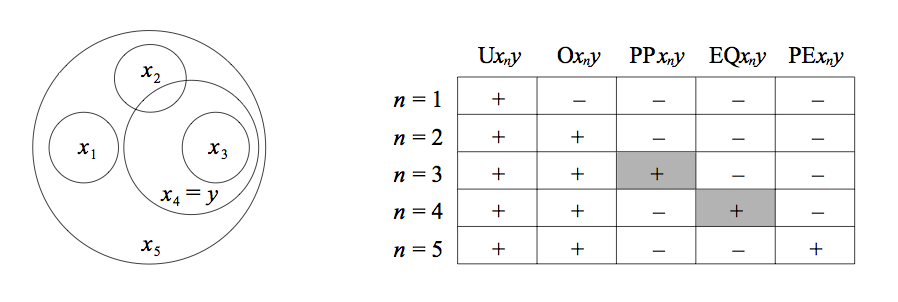
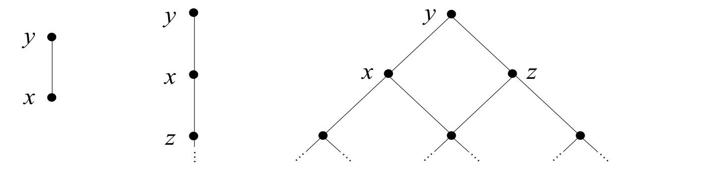
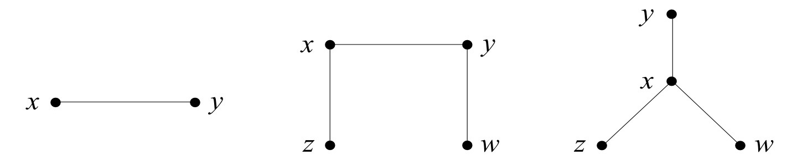
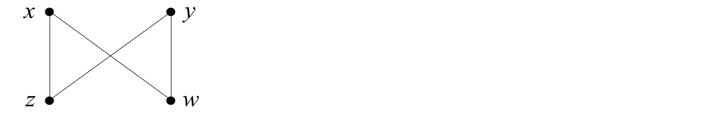
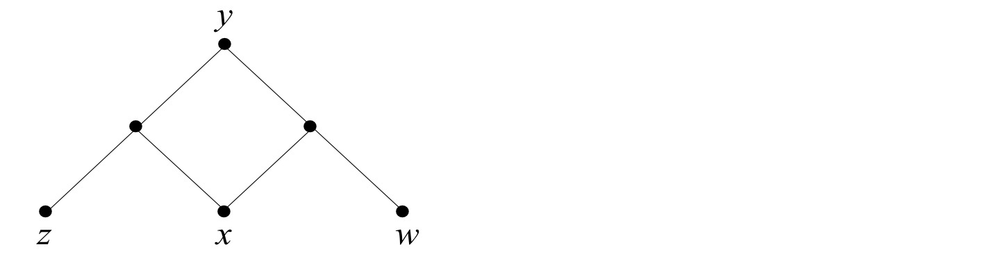
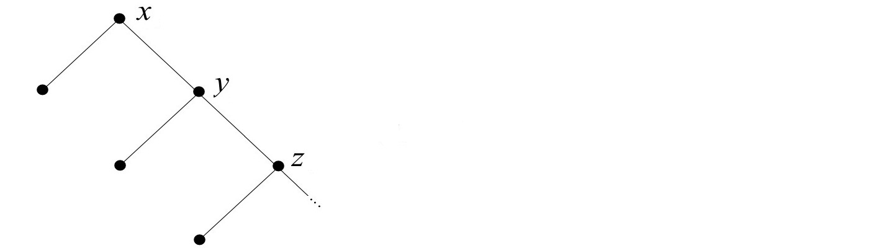
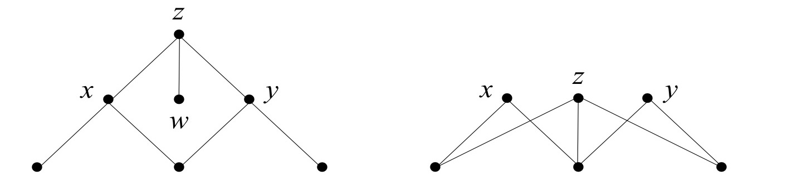
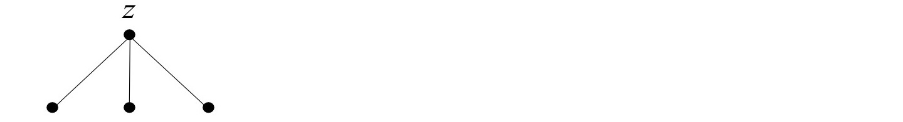
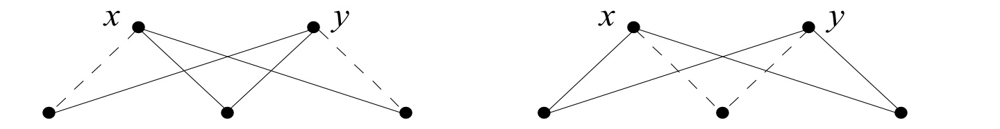

Mereology
Mereology (from the Greek μερος, ‘part’) is the theory of parthood relations: of the relations of part to whole and the relations of part to part within a whole.[1] Its roots can be traced back to the early days of philosophy, beginning with the Presocratics and continuing throughout the writings of Plato (especially the Parmenides and the Theaetetus), Aristotle (especially the Metaphysics, but also the Physics, the Topics, and De partibus animalium), and Boethius (especially De Divisione and In Ciceronis Topica). Mereology occupies a prominent role also in the writings of medieval ontologists and scholastic philosophers such as Garland the Computist, Peter Abelard, Thomas Aquinas, Raymond Lull, John Duns Scotus, Walter Burley, William of Ockham, and Jean Buridan, as well as in Jungius's Logica Hamburgensis (1638), Leibniz's Dissertatio de arte combinatoria (1666) and Monadology (1714), and Kant's early writings (the Gedanken of 1747 and the Monadologia physica of 1756). As a formal theory of parthood relations, however, mereology made its way into our times mainly through the work of Franz Brentano and of his pupils, especially Husserl's third Logical Investigation (1901). The latter may rightly be considered the first attempt at a thorough formulation of a theory, though in a format that makes it difficult to disentangle the analysis of mereological concepts from that of other ontologically relevant notions (such as the relation of ontological dependence).[2] It is not until Leśniewski's Foundations of the General Theory of Sets (1916) and his Foundations of Mathematics (1927–1931) that a pure theory of part-relations was given an exact formulation.[3] And because Leśniewski's work was largely inaccessible to non-speakers of Polish, it is only with the publication of Leonard and Goodman's The Calculus of Individuals (1940), partly under the influence of Whitehead, that mereology has become a chapter of central interest for modern ontologists and metaphysicians.[4]
In the following we focus mostly on contemporary formulations of mereology as they grew out of these recent theories—Leśniewski's and Leonard and Goodman's. Indeed, although such theories come in different logical guises, they are sufficiently similar to be recognized as a common basis for most subsequent developments. To properly assess the relative strengths and weaknesses, however, it will be convenient to proceed in steps. First we consider some core mereological notions and principles. Then we proceed to an examination of the stronger theories that can be erected on that basis.
- 1. ‘Part’ and Parthood
- 2. Core Principles
- 3. Decomposition Principles
- 4. Composition Principles
- 5. Indeterminacy and Fuzziness
- Bibliography
- Other Internet Resources
- Academic Tools
- Related Entries
1. ‘Part’ and Parthood
A preliminary caveat is in order. It concerns the very notion of ‘part’ that mereology is about, which does not have an exact counterpart in ordinary language. Broadly speaking, in English we can use ‘part’ to indicate any portion of a given entity. The portion may itself be attached to the remainder, as in (1), or detached, as in (2); it may be cognitively or functionally salient, as in (1)–(2), or arbitrarily demarcated, as in (3); self-connected, as in (1)–(3), or disconnected, as in (4); homogeneous or otherwise well-matched, as in (1)–(4), or gerrymandered, as in (5); material, as in (1)–(5), or immaterial, as in (6); extended, as in (1)–(6), or unextended, as in (7); spatial, as in (1)–(7), or temporal, as in (8); and so on.
| (1) | The handle is part of the mug. |
| (2) | The remote control is part of the stereo system. |
| (3) | The left half is your part of the cake. |
| (4) | The cutlery is part of the tableware. |
| (5) | The contents of this bag is only part of what I bought. |
| (6) | That area is part of the living room. |
| (7) | The outermost points are part of the perimeter. |
| (8) | The first act was the best part of the play. |
All of these uses illustrate the general notion of ‘part’ that forms the focus of mereology, regardless of any internal distinctions. (For more examples and tentative taxonomies, see Winston et al. 1987, Iris et al. 1988, Gerstl and Pribbenow 1995, Pribbenow 2002, Westerhoff 2004, and Simons 2013.) Sometimes, however, the English word is used in a more restricted sense. For instance, it can be used to designate only the cognitively salient relation of parthood illustrated in (1), the relevant notion of salience being determined by Gestalt factors (Rescher and Oppenheim 1955; Bower and Glass 1976; Palmer 1977) or other perceptual and cognitive factors at large (Tversky 2005). Or it may designate only the functional relation reflected in the parts list included in the user's manual of a machine, or of a ready-to-assemble product, as in (2), in which case the parts of an object x are just its “components”, i.e., those parts that are available as individual units regardless of their actual interaction with the other parts of x. (A component is a part of an object, rather than just part of it; see e.g. Tversky 1989, Simons and Dement 1996.) Clearly, the properties of such restricted relations may not coincide with those of parthood understood more broadly, and it will be apparent that pure mereology is only concerned with the latter.
On the other hand, the English word ‘part’ is sometimes used in a broader sense, too, for instance to designate the relation of material constitution, as in (9), or the relation of mixture composition, as in (10), or the relation of group membership, as in (11):
| (9) | The clay is part of the statue. |
| (10) | Gin is part of martini. |
| (11) | The goalie is part of the team. |
The mereological status of these relations, however, is controversial. For instance, although the constitution relation exemplified in (9) was included by Aristotle in his threefold taxonomy of parthood (Metaphysics, Δ, 1023b), many contemporary authors would rather construe it as a sui generis, non-mereological relation (see e.g. Wiggins 1980, Rea 1995, Baker 1997, Evnine 2011) or else as the relation of identity (Noonan 1993, Pickel 2010), possibly contingent or occasional identity (Gibbard 1975, Robinson 1982, Gallois 1998). Similarly, the ingredient-mixture relationship exemplified in (10) is of dubious mereological status, as the ingredients may undergo significant chemical transformations that alter the structural characteristics they have in isolation (Sharvy 1983, Bogen 1995, Fine 1995a, Needham 2007). As for cases such as (11), there is disagreement concerning whether teams and other groups should be regarded as genuine mereological wholes, and while there are philosophers who do think so (from Oppenheim and Putnam 1958 to Quinton 1976, Copp 1984, Martin 1988, and Sheehy 2006), many are inclined to regard groups as entities of a different sort and to construe the relation of group membership as distinct from parthood (see e.g. Simons 1980, Ruben 1983, Gilbert 1989, Meixner 1997, Uzquiano 2004, Effingham 2010b, and Ritchie 2013 for different proposals). For all these reasons, here we shall take mereology to be concerned mainly with the principles governing the relation exemplified in (1)–(8), leaving it open whether one or more such broader uses of ‘part’ may themselves be subjected to mereological treatments of some sort.
Finally, it is worth stressing that mereology assumes no ontological restriction on the field of ‘part’. In principle, the relata can be as different as material bodies, events, geometric entities, or spatio-temporal regions, as in (1)–(8), as well as abstract entities such as properties, propositions, types, or kinds, as in the following examples:
| (12) | Rationality is part of personhood. |
| (13) | The antecedent is the ‘if’ part of the conditional. |
| (14) | The letter ‘m’ is part of the word ‘mereology’. |
| (15) | Carbon is part of methane. |
This is not uncontentious. For instance, to some philosophers the thought that such abstract entities may be structured mereologically cannot be reconciled with their being universals. To adapt an example from Lewis (1986a), if the letter-type ‘m’ is part of the word-type ‘mereology’, then so is the letter-type ‘e’. But there are two occurrences of ‘e’ in ‘mereology’. Shall we say that the letter is part of the word twice over? Likewise, if carbon is part of methane, then so is hydrogen. But each methane molecule consists of one carbon atom and four hydrogen atoms. Shall we say that hydrogen is part of methane four times over? What could that possibly mean? How can one thing be part of another more than once? These are pressing questions, and the friend of structured universals may want to respond by conceding that the relevant building relation is not parthood but, rather, a non-mereological mode of composition (Armstrong 1986, 1988). However, other options are open, including some that take the difficulty at face value from a mereological standpoint (see e.g. Bigelow and Pargetter 1989, Hawley 2010, Mormann 2010, Bader 2013, and Forrest 2013, forthcoming; see also D. Smith 2009: §4, K. Bennett 2013, Fisher 2013, and Cotnoir 2013b: §4, 2015 for explicit discussion of the idea of being part-related “many times over”). Whether such options are viable may be controversial. Yet their availability bears witness to the full generality of the notion of parthood that mereology seeks to characterize. In this sense, the point to be stressed is metaphilosophical. For while Leśniewski's and Leonard and Goodman's original formulations betray a nominalistic stand, reflecting a conception of mereology as an ontologically parsimonious alternative to set theory, there is no necessary link between the analysis of parthood relations and the philosophical position of nominalism.[5] As a formal theory (in Husserl's sense of ‘formal’, i.e., as opposed to ‘material’) mereology is simply an attempt to lay down the general principles underlying the relationships between an entity and its constituent parts, whatever the nature of the entity, just as set theory is an attempt to lay down the principles underlying the relationships between a set and its members. Unlike set theory, mereology is not committed to the existence of abstracta: the whole can be as concrete as the parts. But mereology carries no nominalistic commitment to concreta either: the parts can be as abstract as the whole.
Whether this way of conceiving of mereology as a general and topic-neutral theory holds water is a question that will not be further addressed here. It will, however, be in the background of much that follows. Likewise, little will be said about the important question of whether one should countenance different (primitive) part-whole relations to hold among different kinds of entity (as urged e.g. by Sharvy 1980, McDaniel 2004, 2009, and Mellor 2006), or perhaps even among entities of the same kind (Fine 1994, 2010). Such a question will nonetheless be relevant to the assessment of certain mereological principles discussed below, whose generality may be claimed to hold only in a restricted sense, or on a limited understanding of ‘part’. For further issues concerning the alleged universality and topic-neutrality of mereology, see also Johnston (2005, 2006), Varzi (2010), Donnelly (2011), Hovda (2014), and Johansson (2015). (Some may even think that there are no parthood relations whatsoever, e.g., because there are there are no causally inert non-logical properties or relations, and parthood would be one such; for a defense of this sort of mereological anti-realism, see Cowling 2014.)
2. Core Principles
With these provisos, and barring for the moment the complications arising from the consideration of intensional factors (such as time and modalities), we may proceed to review some core mereological notions and principles. Ideally, we may distinguish here between (a) those principles that are simply meant to fix the intended meaning of the relational predicate ‘part’, and (b) a variety of additional, more substantive principles that go beyond the obvious and aim at greater sophistication and descriptive power. Exactly where the boundary between (a) and (b) should be drawn, however, or even whether a boundary of this sort can be drawn at all, is by itself a matter of controversy.
2.1 Parthood as a Partial Ordering
The usual starting point is this: regardless of how one feels about matters of ontology, if ‘part’ stands for the general relation exemplified by (1)–(8) above, and perhaps also (12)–(15), then it stands for a partial ordering—a reflexive, transitive, antisymmetric relation:
| (16) | Everything is part of itself. |
| (17) | Any part of any part of a thing is itself part of that thing. |
| (18) | Two distinct things cannot be part of each other. |
As it turns out, most theories put forward in the literature accept (16)–(18). Some misgivings are nonetheless worth mentioning that may, and occasionally have been, raised against these principles.
Concerning reflexivity (16), two sorts of worry may be distinguished. The first is that many legitimate senses of ‘part’ just fly in the face of saying that a whole is part of itself. For instance, Rescher (1955) famously objected to Leonard and Goodman's theory on these grounds, citing the biologists' use of ‘part’ for the functional subunits of an organism as a case in point: no organism is a functional subunit of itself. This is a legitimate worry, but it appears to be of little import. Taking reflexivity (and antisymmetry) as constitutive of the meaning of ‘part’ simply amounts to regarding identity as a limit (improper) case of parthood. A stronger relation, whereby nothing counts as part of itself, can obviously be defined in terms of the weaker one, hence there is no loss of generality (see Section 2.2 below). Vice versa, one could frame a mereological theory by taking proper parthood as a primitive instead. As already Lejewski (1957) noted, this is merely a question of choosing a suitable primitive, so nothing substantive follows from it. (Of course, if one thinks that there are or might be objects that are not self-identical, for instance because of the loss of individuality in the quantum realm, or for whatever other reasons, then such objects would not be part of themselves either, yielding genuine counterexamples to (16). Here, however, we stick to a notion of identity that obeys traditional wisdom, which is to say a notion whereby identity is an equivalence relation subject to Leibniz's law.) The second sort of worry is more serious, for it constitutes a genuine challenge to the idea that (16) expresses a principle that is somehow constitutive of the meaning of ‘part’, as opposed to a substantive metaphysical thesis about parthood. Following Kearns (2011), consider for instance a scenario in which an enduring wall, W, is shrunk down to the size of a brick and eventually brought back in time so as to be used to build (along with other bricks) the original W. Or suppose wall W is bilocated to my left and my right, and I shrink it to the size of a brick on the left and then use it to replace a brick from W on the right. In such cases, one might think that W is part of itself in a sense in which ordinary walls are not, hence that either parthood is not reflexive or proper parthood is not irreflexive. For another example (also by Kearns), if shapes are construed as abstract universals, then self-similar shapes such as fractals may very well be said to contain themselves as parts in a sense in which other shapes do not. Whether such scenarios are indeed possible is by itself a controversial issue, as it depends on a number of background metaphysical questions concerning persistence through time, location in space, and the nature of shapes. But precisely insofar as the scenarios are not obviously impossible, the generality and metaphysical neutrality of (16) may be questioned. (Note that those scenarios also provide reasons to question the generality of many other claims that underlie the way we ordinarily talk, such as the claim that nothing can be larger than itself, or next to itself, or qualitatively different from itself. Such claims might be even more entrenched in common sense than the claim that proper parthood is irreflexive, and parthood reflexive; yet this is hardly a reason to hang on to them at every cost. It simply shows that our ordinary talk does not take into account situations that are—admittedly—extraordinary.)
Similar considerations apply to the transitivity principle, (17). On the one hand, several authors have observed that many legitimate senses of ‘part’ are non-transitive, fostering the study of mereologies in which (17) may fail (Pietruszczak 2014). Examples would include: (i) a biological subunit of a cell is not a part of the organ(ism) of which that cell is a part; (ii) a handle can be part of a door and the door of a house, though a handle is never part of a house; (iii) my fingers are part of me and I am part of the team, yet my fingers are not part of the team. (See again Rescher 1955 along with Cruse 1979 and Winston et al. 1987, respectively; for other examples see Iris et al. 1988, Moltmann 1997, Hossack 2000, Johnston 2002, 2005, Johansson 2004, 2006, and Fiorini et al. 2014). Arguably, however, such misgivings stem again from the ambiguity of the English word ‘part’. What counts as a biological subunit of a cell may not count as a subunit, i.e., a distinguished part of the organ, but that is not to say that it is not part of the organ at all. Similarly, if there is a sense of ‘part’ in which a handle is not part of the house to which it belongs, or my fingers not part of my team, it is a restricted sense: the handle is not a functional part of the house, though it is a functional part of the door and the door a functional part of the house; my fingers are not directly part of the team, though they are directly part of me and I am directly part of the team. (Concerning this last case, Uzquiano 2004: 136–137, Schmitt 2003: 34, and Effingham 2010b: 255 actually read (iii) as a reductio of the very idea that the group-membership relation is a genuine case of parthood, as mentioned above ad (11).) It is obvious that if the interpretation of ‘part’ is narrowed by additional conditions, e.g., by requiring that parts make a functional or direct contribution to the whole, then transitivity may fail. In general, if x is a φ-part of y and y is a φ-part of z, x need not be a φ-part of z: the predicate modifier ‘φ’ may not distribute over parthood. But that shows the non-transitivity of ‘φ-part’, not of ‘part’, and within a sufficiently general framework this can easily be expressed with the help of explicit predicate modifiers (Varzi 2006a; Vieu 2006; Garbacz 2007). On the other hand, there is again a genuine worry that, regardless of any ambiguity concerning the intended interpretation of ‘part’, (17) expresses a substantive metaphysical thesis and cannot, therefore, be taken for granted. For example, it turns out that time-travel and multi-location scenarios such as those mentioned in relation to (16) may also result in violations of the transitivity of both parthood (Effingham 2010a) and proper parthood (Gilmore 2009; Kleinschmidt 2011). And the same could be said of cases that involve no such exotica. For instance, Gilmore (2014) brings attention to the popular theory of structured propositions originated with Russell (1903). Already Frege (1976: 79) pointed out that if the constituents of a proposition are construed mereologically as (proper) parts, then we have a problem: assuming that Mount Etna is literally part of the proposition that Etna is higher than Vesuvius, each individual piece of solidified lava that is part of Etna would also be part of that proposition, which is absurd. The worse for Russell's theory of structured propositions, said Frege. The worse, one could reply, for the transitivity of parthood (short of claiming that the argument involves yet another equivocation on ‘part of’).
Concerning the antisymmetry postulate (18), the picture is even more complex. For one thing, some authors maintain that the relationship between an object and the stuff it is made of provides a perfectly ordinary counterexample of the antisymmetry of parthood: according to Thomson (1998), for example, a statue and the clay that constitutes it are part of each other, yet distinct. This is not a popular view: as already mentioned, most contemporary authors would either deny that material constitution is a relation of parthood or else treat it as improper parthood, i.e., identity, which is trivially antisymmetric (and symmetric). Moreover, those who regard constitution as a genuine case of proper parthood tend to follow Aristotle's hylomorphic conception and deny that the relation also holds in the opposite direction: the clay is part of the statue but not vice versa (see e.g. Haslanger 1994, Koslicki 2008). Still, insofar as Thomson's view is a legitimate option, it represents a challenge to the putative generality of (18). Second, one may wonder about the possibility of unordinary cases of symmetric parthood relationships. Sanford (1993: 222) refers to Borges's Aleph as a case in point: “I saw the earth in the Aleph and in the earth the Aleph once more and the earth in the Aleph …”. In this case, a plausible reply is simply that fiction delivers no guidance to conceptual investigations: conceivability may well be a guide to possibility, but literary fantasy is by itself no evidence of conceivability (van Inwagen 1993: 229). Perhaps the same could be said of Fazang's Jeweled Net of Indra, in which each jewel has every other jewel as part (Jones 2012). However, other cases seem harder to dismiss. Surely the Scholastics were not merely engaging in literary fiction when arguing that each person of the Trinity is a proper part of God, and yet also identical with God (see e.g. Abelard, Theologia christiana, bk. III). And arguably time travel is at least conceivable, in which case again (18) could fail: if time-traveling wall W ends up being one of the bricks that compose (say) its own bottom half, H, then we have a conceivable scenario in which W is part of H and H is part of W while W ≠ H (Kleinschmidt 2011). Third, it may be argued that antisymmetry is also at odds with theories that have been found acceptable on quite independent grounds. Consider again the theory of structured propositions. If A is the proposition that the universe exists—where the universe is something of which everything is part—and if A is true, then on such a theory the universe would be a proper part of A; and since A would in turn be a proper part of U, antisymmetry would be forfeit (Tillman and Fowler 2012). Likewise, if A is the proposition that B is true, and B the proposition that A is contingent, then again A and B would be part of each other even though A ≠ B (Cotnoir 2013b). Finally, and more generally, it may be observed that the possibility of mereological loops is to be taken seriously for the same sort of reasons that led to the development of non-well-founded set theory, i.e., set theory tolerating cases of self-membership and, more generally, of membership circularities (Aczel 1988; Barwise and Moss 1996). This is especially significant in view of the possibility of reformulating set theory itself in mereological terms—a possibility that is extensively worked out in the works of Bunt (1985) and especially Lewis (1991, 1993b) (see also Burgess 2015 and Hamkins and Kikuchi forthcoming). For all these reasons, the antisymmetry postulate (18) can hardly be regarded as constitutive of the basic meaning of ‘part’, and some authors have begun to engage in the systematic study of “non-well-founded mereologies” in which (18) may fail (Cotnoir 2010; Cotnoir and Bacon 2012; Obojska 2013).
In the following we aim at a critical survey of mereology as standardly understood, so we shall mainly confine ourselves to theories that do in fact accept the antisymmetry postulate along with both reflexivity and transitivity. However, the above considerations should not be dismissed. On the contrary, they are crucially relevant in assessing the scope of mereology and the degree to which its standard formulations and extensions betray intuitions that may be found too narrow, false, or otherwise problematic. Indeed, they are crucially relevant also in assessing the ideal desideratum mentioned at the beginning of this section—the desideratum of a neat demarcation between core principles that are simply meant to fix the intended meaning of ‘part’ and principles that reflect more substantive theses concerning the parthood relation. Classical mereology takes the former to include the threefold claim that ‘part’ stands for a reflexive, transitive and antisymmetric relation, but this is not to say that “anyone who seriously disagrees with them had failed to understand the word” (Simons 1987: 11), just as departure from the basic principles of classical logic need not amount to a “change of subject” (Quine 1970: 81). And just as the existence of widespread and diversified disagreement concerning the laws of logic may lead one to conclude that “for all we know, the only inference left in the intersection of (unrestricted) all logics might be the identity inference: From A to infer A” (Beall and Restall 2006: 92), so one might take the above considerations and the corresponding development of non-classical mereologies to indicate that there may be “no reason to assume that any useful core mereology […] functions as a common basis for all plausible metaphysical theories” (Donnelly 2011: 246).
2.2 Other Mereological Concepts
It is convenient at this point to introduce some degree of formalization. This avoids ambiguities stemming from ordinary language and facilitates comparisons and developments. For definiteness, we assume here a standard first-order language with identity, supplied with a distinguished binary predicate constant, ‘P’, to be interpreted as the parthood relation.[6] Taking the underlying logic to be the classical predicate calculus with identity,[7] the requisites on parthood discussed in Section 2.1 may then be regarded as forming a first-order theory characterized by the following proper axioms for ‘P’:
| (P.1) | Reflexivity
Pxx |
| (P.2) | Transitivity
(Pxy ∧ Pyz) → Pxz |
| (P.3) | Antisymmetry
(Pxy ∧ Pyx) → x=y. |
(Here and in the following we simplify notation by dropping all initial universal quantifiers. Unless otherwise specified, all formulas are to be understood as universally closed.) We may call such a theory Core Mereology—M for short[8]—since it represents the common starting point of all standard theories.
Given (P.1)–(P.3), a number of additional mereological predicates can be introduced by definition. For example:
| (19) | Equality
EQxy =df Pxy ∧ Pyx |
| (20) | Proper Parthood
PPxy =df Pxy ∧ ¬x=y |
| (21) | Proper Extension
PExy =df Pyx ∧ ¬x=y |
| (22) | Overlap
Oxy =df ∃z(Pzx ∧ Pzy) |
| (23) | Underlap
Uxy =df ∃z(Pxz ∧ Pyz). |
An intuitive model for these relations, with ‘P’ interpreted as spatial inclusion, is given in Figure 1.
Figure 1. Basic patterns of mereological relations. (Shaded cells indicate parthood).
Note that ‘Uxy’ is bound to hold if one assumes the existence of a “universal entity” of which everything is part. Conversely, ‘Oxy’ would always hold if one assumed the existence of a “null item” that is part of everything. Both assumptions, however, are controversial and we shall come back to them below.
Note also that the definitions imply (by pure logic) that EQ, O, and U are all reflexive and symmetric; in addition, EQ is also transitive—an equivalence relation. By contrast, PP and PE are irreflexive and asymmetric, and it follows from (P.2) that both are also transitive—so they are strict partial orderings. Since the following biconditional is also a straightforward consequence of the axioms (specifically, of P.1),
| (24) | Pxy ↔ (PPxy ∨ x=y), |
it should now be obvious that one could in fact use proper parthood as an alternative starting point for the development of classical mereology, using the right-hand side of (24) as a definiens for ‘P’. This is, for instance, the option followed in Simons (1987), as also in Leśniewski’s original theory (1916), where the partial ordering axioms for ‘P’ are replaced by the strict ordering axioms for ‘PP’.[9] Ditto for ‘PE’, which was in fact the primitive relation in Whitehead's (1919) semi-formal treatment of the mereology of events (and which is just the converse of ‘PP’). Other options are in principle possible, too. For example, Goodman (1951) used ‘O’ as a primitive and Leonard and Goodman (1940) used its opposite:[10]
| (25) | Disjointness
Dxy =df ¬Oxy. |
However, the relations corresponding to such predicates are strictly weaker than PP and PE and no biconditional is provable in M that would yield a corresponding definiens of ‘P’ (though one could define ‘P’ in terms of ‘O’ or ‘D’ in the presence of further axioms; see below ad (61)). Thus, other things being equal, ‘P’, ‘PP’, and ‘PE’ appear to be the only reasonable options. Here we shall stick to ‘P’, referring to J. Parsons (2014) for further discussion.
Finally, note that identity could itself be introduced by definition, due to the following obvious consequence of the antisymmetry postulate (P.3):
| (26) | x=y ↔ EQxy. |
Accordingly, theory M could be formulated in a pure first-order language by assuming (P.1) and (P.2) and replacing (P.3) with the following variant of the Leibniz axiom schema for identity (where φ is any formula in the language):
| (P.3′) | Indiscernibility
EQxy → (φx ↔ φy). |
One may in fact argue on these grounds that the parthood relation is in some sense conceptually prior to the identity relation (as in Sharvy 1983: 234), and since ‘EQ’ is not definable in terms of ‘PP’ or ‘PE’ alone except in the presence of stronger axioms (see below ad (27)), the argument would also provide evidence in favor of ‘P’ as the most fundamental primitive. As we shall see in Section 3.2, however, the link between parthood and identity is philosophically problematic. In order not to compromise our exposition, we shall therefore keep to a language containing both ‘P’ and ‘=’ as primitives. This will also be convenient in view of the previous remarks concerning the controversial status of Antisymmetry, on which (26) depends.
The last remark is also relevant to the definition of ‘PP’ given above. That is the classical definition used by Leśniewski and by Leonard and Goodman and corresponds verbatim to the intuitive characterization of proper parthood used in the previous section. However, in some treatments (including earlier versions of this entry[11]), ‘PP’ is defined directly in terms of ‘P’, without using identity, as per the following variant of (20):
| (20′) | (Strict) Proper Parthood
PPxy =df Pxy ∧ ¬Pyx. |
(See e.g. Goodman 1951: 35; Eberle 1967: 272; Simons 1991a: 286; Casati and Varzi 1999: 36; Niebergall 2011: 274). Similarly for ‘PE’. In M the difference is immaterial, since the relevant definientia are provably equivalent. But the equivalence in question depends crucially on Antisymmetry. Absent (P.3), the second definition is strictly stronger: any two things that are mutually P-related would count as proper parts of each other according to (20) but not, obviously, according to (20′), which forces PP to be asymmetric. Indeed, in the presence of (P.1) and (P.2) the latter definition is still strong enough to deliver a strict partial ordering, whereas (20) does not even yield a transitive relation unless (P.3) is assumed.[12] Another important difference is that, absent (P.3), the biconditional in (24) continues to hold only if ‘PP’ is defined as in (20); if (20′) is used instead, the left-to-right direction fails whenever x and y are distinct mutual parts. In view of the above remarks concerning the doubtful status of (P.3), it is therefore convenient to work with the weaker definition. Standardly it makes no difference, but some of the definitions and results presented below would not extend to non-well-founded mereology if (20′) were used instead. (See e.g. Cotnoir 2010 and Gilmore 2016.) Furthermore, since both definitions force PP to be irreflexive, it should be noted that the only way to develop a non-well-founded mereology that allows for strict mereological loops, i.e., things that are proper part of themselves, is to rely on yet another definition or else take ‘PP’ as a primitive (as in Cotnoir and Bacon 2012, where PP is axiomatized as transitive but neither irreflexive nor asymmetric).
3. Decomposition Principles
M is standardly viewed as embodying the common core of any mereological theory. Not just any partial ordering qualifies as a part-whole relation, though, and establishing what further principles should be added to (P.1)–(P.3) is precisely the question a good mereological theory is meant to answer. It is here that philosophical issues begin to multiply, over and above the general concerns mentioned in Section 2.1.
Generally speaking, such further principles may be divided into two main groups. On the one hand, one may extend M by means of decomposition principles that take us from a whole to its parts. For example, one may consider the idea that whenever something has a proper part, it has more than one—i.e., that there is always some mereological difference (a “remainder”) between a whole and its proper parts. This need not be true in every model for M: a world with only two items, only one of which is part of the other, would be a counterexample, though not one that could be illustrated with the sort of geometric diagram used in Figure 1. On the other hand, one may extend M by means of composition principles that go in the opposite direction—from the parts to the whole. For example, one may consider the idea that whenever there are some things, there exists a whole that consists exactly of those things—i.e., that there is always a mereological sum (or “fusion”) of two or more parts. Again, this need not be true in a model for M, and it is a matter of much controversy whether the idea should hold unrestrictedly.
3.1 Supplementation
Let us begin with the first sort of extension. And let us start by taking a closer look at the intuition according to which a whole cannot be decomposed into a single proper part. There are various ways in which one can try to capture this intuition. Consider the following (from Simons 1987: 26–28):
| (P.4a) | Company
PPxy → ∃z(PPzy ∧ ¬z=x) |
| (P.4b) | Strong Company
PPxy → ∃z(PPzy ∧ ¬Pzx) |
| (P.4) | Supplementation[13]
PPxy → ∃z(Pzy ∧ ¬Ozx). |
The first principle, (P.4a), is a literal rendering of the idea in question: every proper part must be accompanied by another. However, there is an obvious sense in which (P.4a) only captures the letter of the idea, not the spirit: it rules out the unintended model mentioned above (see Figure 2, left) but not, for example, an implausible model with an infinitely descending chain in which the additional proper parts do not leave any remainder at all (Figure 2, center).
The second principle, (P.4b), is stronger: it rules out both models as unacceptable. However, (P.4b) is still too weak to capture the intended idea. For example, it is satisfied by a model in which a whole can be decomposed into several proper parts all of which overlap one another (Figure 2, right), and it may be argued that such models do not do justice to the meaning of ‘proper part’: after all, the idea is that the removal of a proper part should leave a remainder, but it is by no means clear what would be left of x once z (along with its parts) is removed.
Figure 2. Three unsupplemented models. (Here and in the diagrams below, connected lines going downwards represent proper extension relationships, i.e., the inverse of proper parthood. Thus, in all diagrams parthood behaves reflexively and transitively.)
It is only the third principle, (P.4), that appears to provide a full formulation of the idea that a whole cannot be decomposed into a single proper part. According to this principle, every proper part must be “supplemented” by another, disjoint part, and it is this last qualification that captures the notion of a remainder. Should (P.4), then, be incorporated into M as a further fundamental principle on the meaning of ‘part’?
Most authors (beginning with Simons himself) would say so. Yet here there is room for genuine disagreement. In fact, it is not difficult to conceive of mereological scenarios that violate not only (P.4), but also (P.4b) and even (P.4a). A case in point would be Brentano's (1933) theory of accidents, according to which a mind is a proper part of a thinking mind even though there is nothing to make up for the difference. (See Chisholm 1978, Baumgartner and Simons 1993.) Similarly, in Fine's (1982) theory of qua-objects, every basic object (John) qualifies as the only proper part of its incarnations (John qua philosopher, John qua husband, etc.). Another interesting example is provided by Whitehead's (1929) theory of extensive connection, where no boundary elements are included in the domain of quantification: on this theory, a topologically closed region includes its open interior as a proper part in spite of there being no boundary elements to distinguish them—the domain only consists of extended regions. (See Clarke 1981 for a rigorous formulation, Randell et al. 1992 for developments.) Finally, consider the view, arguably held by Aquinas, according to which the human person survives physical death along with her soul (see Brown 2005 and Stump 2006, pace Toner 2009). On the understanding that persons are hylomorphic composites, and that two things cannot become one, the view implies that upon losing her body a person will continue to exist, pre-resurrection, with only one proper part—the soul. (This is also the view of some contemporary philosophers; see e.g. Oderberg 2005 and Hershenov and Koch-Hershenov 2006.) Indeed, any case of material coincidence resulting from mereological diminution, as in the Stoic puzzle of Deon and Theon (Sedley 1982) and its modern variant of Tibbles and Tib (Wiggins 1968), would seem to be at odds with Supplementation: after the diminution, there is nothing that makes up for the difference between what was a proper part and the whole with which it comes to coincide, short of holding that the part has become identical to the whole (Gallois 1998), or has ceased to exist (Burke 1994), or did not exist in the first place (van Inwagen 1981). One may rely on the intuitive appeal of (P.4) to discard all of the above theories and scenarios as implausible. But one may as well turn things around and regard the plausibility of such theories as a good reason not to accept (P.4) unrestrictedly, as argued e.g. by D. Smith (2009), Oderberg (2012), and Lowe (2013). As things stand, it therefore seems appropriate to regard such a principle as providing a minimal but substantive addition to (P.1)–(P.3), one that goes beyond the basic characterization of ‘part’ provided by M. We shall label the resulting mereological theory MM, for Minimal Mereology.
Actually MM is now redundant, as Supplementation turns out to entail Antisymmetry so long as parthood is transitive and reflexive: if x and y were proper parts of each other, contrary to (P.3), then every z that is part of one would also be part of—hence overlap—the other, contrary to (P.4). For ease of reference, we shall continue to treat (P.3) as an axiom. But the entailment is worth emphasizing, for it explains why Supplementation tends to be explicitly rejected by those who do not endorse Antisymmetry, over and above the more classical examples mentioned above. For instance, whoever thinks that a statue and the corresponding lump of clay are part of each other will find Supplementation unreasonable: after all, such parts are coextensive; why should we expect anything to be left over when, say, the clay is “subtracted” from the statue? (Donnelly 2011: 230). Indeed, Supplementation has recently run into trouble also independently of its link with Antisymmetry, especially in the context of time-travel and multilocation scenarios such as those already mentioned in connection with each of (P.1)–(P.3) (see Effingham and Robson 2007, Gilmore 2007, Eagle 2010, Kleinschmidt 2011, Daniels 2014). As a result, a question that is gaining increasing attention is whether there are any ways of capturing the supplementation intuition that are strong enough to rule out the models of Figure 2 and yet sufficiently weaker than (P.4) to be acceptable to those who do not endorse some M-axiom or other—be it Antisymmetry, Transitivity, or Reflexivity.
Two sorts of answer may be offered in this regard (see e.g. Gilmore 2016). The first is to weaken the Supplementation conditional by strengthening the antecedent. For instance, one may simply rephrase (P.4) in terms of the stricter notion of proper parthood defined in (20′), i.e., effectively:
| (P.4c) | Strict Supplementation
(Pxy ∧ ¬Pyx) → ∃z(Pzy ∧ ¬Ozx). |
In M this is equivalent to (P.4). Yet it is logically weaker, and it is easy to see that this suffices to block the entailment of (P.3) even in the presence of (P.1)–(P.2) (just consider a two-element model with mutual parthood, as in Figure 3, left). Still, (P.4c) is sufficiently stronger than (P.4a) and (P.4b) to rule out all three patterns in Figure 2, and it obviously preserves the spirit of (P.4)—if not the letter. The second sort of answer is to weaken Supplementation by adjusting the consequent. There are various ways of doing this, the most natural of which appears to be the following:
| (P.4d) | Quasi-supplementation
PPxy → ∃z∃w(Pzy ∧ Pwy ∧ ¬Ozw). |
Again, this principle is stronger than (P.4a) and (P.4b), since it rules out all patterns in Figure 2, and in M it is equivalent to (P.4). Indeed, (P.4d) says, literally, that if something has a proper part, then it has at least two disjoint parts, which Simons (1987: 27) takes to express the same intuition captured by (P.4). Yet (P.4d) is logically weaker than (P.4), since it admits the non-antisymmetric model in Figure 3, middle, and for that reason it may be deemed more suitable in the context of theories that violate (P.3). Note also that (P.4d) does not admit the symmetric model on Figure 3, left, so in a way it is stronger than (P.4c). In another way, however, it is weaker, since it admits the model in Figure 3, right, which (P.4c) rules out (and which someone who thinks that, say, the clay is part of the statue, but not vice versa, might want to retain).
Figure 3. More unsupplemented patterns.
There are other options, too. For instance, in some standard treatments, the Supplementation principle (P.4) is formulated using ‘PP’ also in the consequent:
| (P.4′) | Proper Supplementation
PPxy → ∃z(PPzy ∧ ¬Ozx). |
In M this is once again equivalent to (P.4), but the equivalence depends on Reflexivity and Symmetry. Absent (P.1) or (P.2), (P.4′) is logically stronger. Yet again one may rely on the alternative definition of ‘PP’ to obtain variants of (P.4′) that are stronger than (P.4c) and weaker than (P.4). Similarly for (P.4d), which may be further weakened or strengthened by tampering with the parthood predicates occurring in the antecedent and in the consequent.
3.2 Strong Supplementation and Extensionality
We may also ask the opposite question: Are there any stronger ways of expressing the supplementation intuition besides (P.4)? In classical mereology, the standard answer is in the affirmative, the main candidate being the following:
| (P.5) | Strong Supplementation
¬Pyx → ∃z(Pzy ∧ ¬Ozx). |
Intuitively, this says that if an object fails to include another among its parts, then there must be a remainder, something that makes up for the difference. It is easily seen that, given M, (P.5) implies (P.4), so any M-theory violating (P.4) will a fortiori violate (P.5). For instance, on Whitehead's boundary-free theory of extensive connection, a closed region is not part of its interior even though each part of the former overlaps the latter. More generally, the entailment holds as long as parthood is antisymmetric (see again Figure 3, center, for a non-antisymmetric counterexample). However, the converse is not true. The diagram in Figure 4 illustrates an M-model in which (P.4) is satisfied, since each proper part counts as a supplement of the other; yet (P.5) is false.
Figure 4. A supplemented model violating Strong Supplementation.
The theory obtained by adding (P.5) to (P.1)–(P.3) is thus a proper extension of MM. We label this stronger theory EM, for Extensional Mereology, the attribute ‘extensional’ being justified precisely by the exclusion of countermodels that, like the one in Figure 4, contain distinct objects with the same proper parts. In fact, it is a theorem of EM that no composite objects with the same proper parts can be distinguished:
| (27) | (∃zPPzx ∨ ∃zPPzy) → (x=y ↔ ∀z(PPzx ↔ PPzy)). |
(The analogue for ‘P’ is already provable in M, since P is reflexive and antisymmetric.) This goes far beyond the intuition that lies behind the basic Supplementation principle (P.4). Does it go too far?
On the face of it, it is not difficult to envisage scenarios that would correspond to the diagram in Figure 4. For example, we may take x and y to be the sets {{z}, {z, w}} and {{w},{z, w}}, respectively (i.e., the ordered pairs ⟨z, w⟩ and ⟨w, z⟩), interpreting ‘P’ as the ancestral of the improper membership relation (i.e., of the union of ∈ and =). But sets are abstract entities, and the ancestral relation does not generally satisfy (P.4) (the singleton of the empty set, for instance, or the singleton of any urelement, would have only one proper part on the suggested construal of ‘P’). Can we also envisage similar scenarios in the domain of concrete, spatially extended entities, granting (P.4) in its generality? Admittedly, it is difficult to picture two concrete objects mereologically structured as in Figure 4. It is difficult, for example, to draw two extended objects composed of the same proper parts because drawing something is drawing its proper parts; once the parts are drawn, there is nothing left to be done to get a drawing of the whole. Yet this only proves that pictures are biased towards (P.5). Are there any philosophical reasons to resist the extensional force of (P.5) beyond the domain of abstract entities, and in the presence of (P.4)?
Two sorts of reason are worth examining. On the one hand, it is sometimes argued that sameness of proper parts is not sufficient for identity. For example, it is argued that: (i) two words can be made up of the same letters (Hempel 1953: 110; Rescher 1955: 10), two tunes of the same notes (Rosen and Dorr 2002: 154), and so on; or (ii) the same flowers can compose a nice bunch or a scattered bundle, depending on the arrangements of the individual flowers (Eberle 1970: §2.10); or (iii) two groups can have co-extensive memberships, say, the Library Committee and the Philosophy Department football team (Simons 1987: 114; Gilbert 1989: 273); or (iv) a cat must be distinguished from the corresponding amount of feline tissue, for the former can survive the annihilation of certain parts (the tail, for instance) whereas the latter cannot by definition (Wiggins 1968; see also Doepke 1982, Lowe 1989, Johnston 1992, Baker 1997, Meirav 2003, Sanford 2003, and Crane 2012, inter alia, for similar or related arguments). On the other hand, it is sometimes argued that sameness of parts is not necessary for identity, as some entities may survive mereological change. If a cat survives the annihilation of its tail, then the tailed cat (before the accident) and the tailless cat (after the accident) are numerically the same in spite of their having different proper parts (Wiggins 1980). If any of these arguments is accepted, then clearly (27) is too strong a principle to be imposed on the parthood relation. And since (27) follows from (P.5), it might be concluded that EM is on the wrong track.
Let us look at these objections separately. Concerning the necessity aspect of mereological extensionality, i.e., the left-to-right conditional in the consequent of (27),
| (28) | x=y → ∀z(PPzx ↔ PPzy), |
it is perhaps enough to remark that the difficulty is not peculiar to extensional mereology. The objection proceeds from the consideration that ordinary entities such as cats and other living organisms (and possibly other entities as well, such as statues and ships) survive all sorts of gradual mereological change. This a legitimate thought, lest one be forced into some form of “mereological essentialism” (Chisholm 1973, 1975, 1976; Plantinga 1975; Wiggins 1979). However, the same can be said of other types of change as well: bananas ripen, houses deteriorate, people sleep at night and eat at lunch. How can we say that they are the same things, if they are not quite the same? Indeed, (28) is essentially an instance of the identity axiom schema
| (ID) | x=y → (φx ↔ φy), |
and it is well known that this axiom schema runs into trouble when ‘=’ is given a diachronic reading. (See the entries on change and identity over time.) The problem is a general one. Whatever the solution, it will therefore apply to the case at issue as well, and in this sense the above-mentioned objection to (28) can be disregarded. For example, the problem would dissolve immediately if the variables in (28) were taken to range over four-dimensional entities whose parts may extend in time as well as in space (Heller 1984, Lewis 1986b, Sider 2001), or if identity itself were construed as a contingent relation that may hold at some times or worlds but not at others (Gibbard 1975, Myro 1985, Gallois 1998). Alternatively, on a more traditional, three-dimensional conception of material objects, the problem of change is often accounted for by relativizing properties and relations to times, rewriting (ID) as
| (ID′) | x=y → ∀t(φtx ↔ φty). |
(This may be understood in various ways; see e.g. the papers in Haslanger and Kurtz 2006, Part III.) If so, then again the specific worry about (28) would dissolve, as the relativized version of (P.5) would only warrant the following variant of the conditional in question:
| (28′) | x=y → ∀t∀z(PPtzx ↔ PPtzy). |
(See Thomson 1983, Simons 1987: §5.2, Masolo 2009, Giaretta and Spolaore 2011; see also Kazmi 1990 and Hovda 2013 for tensed versions of this strategy.) The need to relativize parthood to time, and perhaps to other parameters such as space, possible worlds, etc., has recently been motivated also on independent grounds, from the so-called “problem of the many” (Hudson 2001) to material constitution (Bittner and Donnelly 2007), modal realism (McDaniel 2004), vagueness (Donnelly 2009), relativistic spacetime (Balashov 2008), or the general theory of location (Gilmore 2009, Donnelly 2010). One way or the other, then, such revisions may be regarded as an indicator of the limited ontological neutrality of extensional mereology. But their independent motivation also bears witness to the fact that controversies about (28) stem from genuine and fundamental philosophical conundrums and cannot be assessed by appealing to our intuitions about the meaning of ‘part’.
The worry about the sufficiency aspect of mereological extensionality, i.e., the right-to-left conditional in the consequent of (27),
| (29) | ∀z(PPzx ↔ PPzy) → x=y, |
is more to the point. However, here too there are various ways of responding on behalf of EM. Consider counterexample (i)—say, two words made up of the same letters, as in ‘else’ and ‘seel’. If these are taken as word-types, a lot depends on how exactly one construes such things mereologically, and one might simply dismiss the challenge by rejecting, or improving on, the dime-store thought that word-types are letter-type composites (see above ad (14)). Indeed, if they were, then word-types would not only violate extensionality, hence the Strong Supplementation principle (P.5); they would violate the basic Supplementation principle (P.4), since ‘seel’ (for instance) would contain a proper part (the string ‘ee’) that consists of a single proper part (the letter ‘e’). On the other hand, if the items in question are taken as word-tokens, then presumably they are made up of distinct letter-tokens, so again there is no violation of (29), hence no reason to reject (P.5) on these grounds. Of course, we may suppose that one of the two word-tokens is obtained from the other by rearranging the same letter-tokens. If so, however, the issue becomes once again one of diachronic non-identity, with all that it entails, and it is not obvious that we have a counterexample to (29). (See Lewis 1991: 78f.) What if our letter-tokens are suitably arranged so as to form both words at the same time? For example, suppose they are arranged in a circle (Simons 1987: 114). In this case one might be inclined to say that we have a genuine counterexample. But one may equally well insist that we have got just one circular inscription that, curiously, can be read as two different words depending on where we start. Compare: I draw a rabbit that to you looks like a duck. Have I thereby made two drawings? I write ‘p’ on my office glass door; from the outside you read ‘q’. Have I therefore produced two letter-tokens? And what if Mary joins you and reads it upside down; have I also written the letter ‘b’? Surely then I have also written the letter ‘d’, as my upside-down office mate John points out. This multiplication of entities seems preposterous. There is just one thing there, one inscription, and what it looks (or mean) to you or me or Mary or John is irrelevant to what that thing is. Similarly—it may be argued—there is just one inscription in our example, a circular display of four letter-tokens, and whether we read it as an ‘else’-inscription or a ‘seel’-inscription is irrelevant to its mereological structure. (Varzi 2008)
Case (ii)—the flowers—is not significantly different. The same, concrete flowers cannot compose a nice bunch and a scattered bundle at the same time. Similarly for many other cases of this sort that may come to mind, including much less frivolous prima facie counterexamples offered by the natural sciences—from the different phases of matter (solids, liquids, and gases) to the different possibilities of chemical binding; see e.g. Harré and Llored (2011, 2013) and Sukumar (2013). (Not all cases are so easily dismissed, though. In particular, several authors—from Maudlin 1998 to Krause 2011—have argued that the world of quantum mechanics provides genuine type-(ii) counterexamples to extensionality. A full treatment of such arguments goes beyond the scope of this entry, but see e.g. Calosi et al. 2011 and Calosi and Tarozzi 2014 for counter-arguments.)
Case (iii) is more delicate, as it depends on one's metaphysics of such things as committees, teams, and groups generally. If one denies that the relevant structural relation is a genuine case of parthood (see Section 1, ad (11)), then of course the counterexample misfires. If, on the other hand, one takes groups to be bona fide mereological composites—and composites consisting of enduring persons as opposed to, say, person-stages, as in Copp (1984)—then a lot depends on one's reasons to treat groups with co-extensive memberships as in fact distinct. Typically such reasons are just taken for granted, as if the distinctness were obvious. But sometimes informal arguments are offered to the effect that, say, the coextensive Library Committee and football team must be distinguished insofar as they have different persistence conditions, or different properties broadly understood. For instance, the players of the team can change even though the Committee remains the same, or one group can be dismantled even though the other continues to operate, or one group has different legal obligations than the other, and so on (see e.g. Moltmann 1997). If so, then case (iii) becomes relevantly similar to case (iv). There, too, the intuition is that a living animal such as a cat is something “over and above” the mere lump of feline tissue that constitutes its body—that they have different survival conditions and, hence, different properties—so it appears that here we have a genuine counterexample to mereological extensionality (via Leibniz's Law). It is for similar reasons that some philosophers are inclined to treat a vase and the corresponding lump of clay as distinct in spite of their sharing the same proper parts—possibly even the same improper parts, contrary to (P.3), as seen in Section 2.2.[14] Two responses may nonetheless be offered in such cases on behalf of EM (besides rejecting the intuition in question on the basis of a specific metaphysics of persistence).
Focusing on (iv), the first response is to insist that, on the face of it, a cat and the corresponding lump of feline tissue (or a statue and the lump of clay that constitutes it) do not share the same proper parts after all. For, on the one hand, if one believes that at least one such thing, x, is part of the other, y, then it must be a proper part; and insofar as nothing can be a proper part of itself, it follows immediately that such things do not in fact constitute a counterexample to (29). (This would also follow from Supplementation, as emphasized e.g. in Olson 2006, since the assumption that x and y have the same proper parts entails that no part of y is disjoint from x, at least so long as parthood is reflexive; but there is no need to invoke (P.4) here.) On the other hand, if one believes that neither x nor y is part of the other, then presumably the same belief will also apply to some of their proper parts—say, the cat's tail and the corresponding lump of tissue. And if the tail is not part of that lump, then presumably it is also not part of the larger lump of tissue that constitutes the whole cat (as explicitly acknowledged by some anti-extensionalists, e.g. Lowe 2001: 148 and Fine 2003: 198, n. 5, though see Hershenov 2008 for misgivings). Thus, again, it would appear that x and y do not have the same proper parts after all and do not, therefore, constitute a counterexample to (29). (For more on this line of argument, see Varzi 2008.)
The second and more general response on behalf of EM is that the appeal to Leibniz's law in this context is illegitimate. Let ‘Tibbles’ name our cat and ‘Tail’ its tail, and grant the truth of
| (30) | Tibbles can survive the annihilation of Tail. |
There is, indeed, an intuitive sense in which the following is also true:
| (31) | The lump of feline tissue constituting Tail and the rest of Tibbles's body cannot survive the annihilation of Tail. |
However, this intuitive sense corresponds to a de dicto reading of the modality, where the definite description in (31) has narrow scope:
| (31a) | In every possible world, the lump of feline tissue constituting Tail and the rest of Tibbles's body ceases to exist if Tail is annihilated. |
On this reading, (31) is hardly negotiable. Yet this is irrelevant in the present context, for (31a) does not amount to an ascription of a modal property and cannot be used in connection with Leibniz's law. (Compare: 8 is necessarily even; the number of planets might have been odd; hence the number of planets is not 8.) On the other hand, consider a de re reading of (31), where the definite description has wide scope:
| (31b) | The lump of feline tissue constituting Tail and the rest of Tibbles's body is such that, in every possible world, it ceases to exist if Tail is annihilated. |
On this reading, the appeal to Leibniz's law would be legitimate (modulo any concerns about the status of modal properties) and one could rely on the truth of (30) and (31) (i.e., (31b)) to conclude that Tibbles is distinct from the relevant lump of feline tissue. However, there is no obvious reason why (31) should be regarded as true on this reading. That is, there is no obvious reason to suppose that the lump of feline tissue that in the actual world constitutes Tail and the rest of Tibbles's body—that lump of feline tissue that is now resting on the carpet—cannot survive the annihilation of Tail. Indeed, it would appear that any reason in favor of this claim vis-à-vis the truth of (30) would have to presuppose the distinctness of the entities in question, so no appeal to Leibniz's law would be legitimate to determine the distinctess (on pain of circularity). This is not to say that the putative counterexample to (29) is wrong-headed. But it requires genuine metaphysical work to establish it and it makes the rejection of extensionality, and with it the rejection of the Strong Supplementation principle (P.5), a matter of genuine philosophical controversy. (Similar remarks would apply to any argument intended to reject extensionality on the basis of competing modal intuitions regarding the possibility of mereological rearrangement, rather than mereological change, as with the flowers example. On a de re reading, the claim that a bunch of flowers could not survive rearrangement of the parts—while the aggregate of the individual flowers composing it could—must be backed up by a genuine metaphysical theory about those entities. For more on this general line of defense on behalf of (29), see e.g. Lewis 1971: 204ff, Jubien 1993: 118ff, and Varzi 2000: 291ff. See also King's 2006 reply to Fine 2003 for a more general diagnosis of the semantic mechanisms at issue here.)
3.3 Complementation
There is a way of expressing the supplementation intuition that is even stronger than (P.5). It corresponds to the following thesis, which differs from (P.5) in the consequent:
| (P.6) | Complementation[15]
¬Pyx → ∃z∀w(Pwz ↔ (Pwy ∧ ¬ Owx)). |
This says that if y is not part of x, there exists something that comprises exactly those parts of y that are disjoint from x—something we may call the difference or relative complement between y and x. It is easily checked that this principle implies (P.5). On the other hand, the diagram in Figure 5 shows that the converse does not hold: there are two parts of y in this diagram that do not overlap x, namely z and w, but there is nothing that consists exactly of such parts, so we have a model of (P.5) in which (P.6) fails.
Figure 5. A strongly supplemented model violating Complementation.
Any misgivings about (P.5) may of course be raised against (P.6). But what if we agree with the above arguments in support of (P.5)? Do they also give us reasons to accept the stronger principle (P.6)? The answer is in the negative. Plausible as it may initially sound, (P.6) has consequences that even an extensionalist may not be willing to accept. For example, it may be argued that although the base and the stem of this wine glass jointly compose a larger part of the glass itself, and similarly for the stem and the bowl, there is nothing composed just of the base and the bowl (= the difference between the glass and the stem), since these two pieces are standing apart. More generally, it appears that (P.6) would force one to accept the existence of a wealth of “scattered” entities, such as the aggregate consisting of your nose and your thumbs, or the aggregate of all mountains higher than Mont Blanc. And since V. Lowe (1953), many authors have expressed discomfort with such entities regardless of extensionality. (One philosopher who explicitly accepts extensionality but feels uneasy about scattered entities is Chisholm 1987.) As it turns out, the extra strength of (P.6) is therefore best appreciated in terms of the sort of mereological aggregates that this principle would force us to accept, aggregates that are composed of two or more parts of a given whole. This suggests that any additional misgivings about (P.6), besides its extensional implications, are truly misgivings about matters of composition. We shall accordingly postpone their discussion to Section 4, where we shall attend to these matters more fully. For the moment, let us simply say that (P.6) is, on the face of it, not a principle that can be added to M without further argument.
3.4 Atomism, Gunk, and Other Options
One last important family of decomposition principles concerns the question of atomism. Mereologically, an atom (or “simple”) is an entity with no proper parts, regardless of whether it is point-like or has spatial (and/or temporal) extension:
| (32) | Atom
Ax =df ¬∃yPPyx. |
By definition of ‘PP’, all atoms are pairwise disjoint and can only overlap things of which they are part. Are there any such entities? And, if there are, is everything entirely made up of atoms? Is everything comprised of at least some atoms? Or is everything made up of atomless “gunk”—as Lewis (1991: 20) calls it—that divides forever into smaller and smaller parts? These are deep and difficult questions, which have been the focus of philosophical investigation since the early days of philosophy and throughout the medieval and modern debate on anti-divisibilism, up to Kant's antinomies in the Critique of Pure Reason (see the entries on ancient atomism and atomism from the 17th to the 20th century). Along with nuclear physics, they made their way into contemporary mereology mainly through Nicod's (1924) “geometry of the sensible world”, Tarski's (1929) “geometry of solids”, and Whitehead's (1929) theory of “extensive connection” mentioned in Section 3.1, and are now center stage in many mereological disputes at the intersection between metaphysics and the philosophy of space and time (see, for example, Sider 1993, Forrest 1996a, Zimmerman 1996, Markosian 1998a, Schaffer 2003, McDaniel 2006, Hudson 2007a, Arntzenius 2008, and J. Russell 2008, and the papers collected in Hudson 2004; see also Sobociński 1971 and Eberle 1967 for some early treatments of these questions in the spirit of Leśniewski's Mereology and of Leonard and Goodman's Calculus of Individuals, respectively). Here we shall confine ourselves to a brief examination.
The two main options, to the effect that everything is ultimately made up of atoms, or that there are no atoms at all, are typically expressed by the following postulates, respectively:
| (P.7) | Atomicity
∃y(Ay ∧ Pyx) |
| (P.8) | Atomlessness
∃yPPyx. |
(See e.g. Simons 1987: 42.) These postulates are mutually incompatible, but taken in isolation they can consistently be added to any standard mereological theory X considered here. Adding (P.7) yields a corresponding Atomistic version, AX; adding (P.8) yields an Atomless version, ÃX. Since finitude together with the antisymmetry of parthood (P.3) jointly imply that mereological decomposition must eventually come to an end, it is clear that any finite model of M—and a fortiori of any extension of M—must be atomistic. Accordingly, an atomless mereology ÃX admits only models of infinite cardinality. An example of such a model, establishing the consistency of the atomless versions of most standard mereologies considered in this survey, is provided by the regular open sets of a Euclidean space, with ‘P’ interpreted as set-inclusion (Tarski 1935). On the other hand, the consistency of an atomistic theory is typically guaranteed by the trivial one-element model (with ‘P’ interpreted as identity), though one can also have models of atomistic theories that allow for infinite domains. A case in point is provided by the closed intervals on the real line, or the closed sets of a Euclidean space (Eberle 1970). In fact, it turns out that even when X is as strong as the full calculus of individuals, corresponding to the theory GEM of Section 4.4, there is no purely mereological formula that says whether there are finitely or infinitely many atoms, i.e., that is true in every finite model of AX but in no infinite model (Hodges and Lewis 1968).
Concerning Atomicity, it is also worth noting that (P.7) does not quite say that everything is ultimately made up of atoms; it merely says that everything has atomic parts.[16] As such it rules out gunky worlds, but one may wonder whether it fully captures the atomistic intuition. In a way, the answer is in the affirmative. For, assuming Reflexivity and Transitivity, (P.7) is equivalent to the following
| (33) | Pzx → ∃y(Ay ∧ Pyx ∧ Oyz), |
which is logically equivalent to
| (34) | ((Ay ∧ Pyx) → Pyx) ∧ (Pzx → ∃y(Ay ∧ Pyx ∧ Oyz)) |
(adding a tautological conjunct), which is an instance of the general schema
| (35) | (φy → Pyx) ∧ (Pzx → ∃y(φy ∧ Oyz)). |
And (35) is the closest we can get to saying that x is composed of the φs, i.e., all and only those entities that satisfy the given condition φ (in the present case: being an atomic part of x): every φ is part of x, and any part of x overlaps some φ. Indeed, provided the φs are pairwise disjoint, this is the standard definition of what it means for something x to be composed of the φs (van Inwagen 1990: 29), and surely enough, if the φs are all atomic, then they are pairwise disjoint. Thus, although (P.7) does not say that everything is ultimately composed of atoms, it implies it—at least in the presence of (P.1) and (P.2). (Of course, non-standard mereologies in which either postulates is rejected may not warrant the initial equivalence, so in such theories (33) would perhaps be a better way to express the assumption of atomism.) In another way, however, (34) may still not be enough. For if the domain is infinite, (P.7) admits of models that seem to run afoul of the atomistic doctrine. A simple example is a descending chain of decomposition that never “bottoms out”, as in Figure 6: here x is ultimately composed of atoms, but the pattern of decomposition that goes down the right branch “looks” awfully similar to a gunky precipice. For a concrete example (from Eberle 1970: 75), consider the set of all subsets of the natural numbers, with parthood modeled by the subset relation. In such a universe, each singleton {n} will count as an atom and each infinite set {m: m > n} will be “made up” of atoms. Yet the set of all such infinite sets will be infinitely descending. Models of this sort do not violate the idea that everything is ultimately composed of atoms. However, they violate the idea that everything can be decomposed into its ultimate constituents. And this may be found problematic if atomism is meant to carry the weight of metaphysical grounding: as J. Schaffer puts it, the atomist's ontology seems to drain away “down a bottomless pit” (2007: 184); being is “infinitely deferred, never achieved” (2010: 62). Are there any ways available to the atomist to avoid this charge? One option would simply be to require that every model be finite, or that it involve only a finite set of atoms. Yet such requirements, besides being philosophically harsh and controversial even among atomists, cannot be formally implemented in first-order mereology, the former for well-known model-theoretic reasons and the latter in view of the above-mentioned result by Hodges and Lewis (1968). The only reasonable option would seem to be a genuine strengthening of Atomicity in the spirit of what Cotnoir (2013c) calls “superatomism”. Given any object x, (P.7) guarantees the existence of some parthood chain that bottoms out at an atom. Superatomicity would require that every parthood chain of x bottoms out—a property that fails in the model of Figure 6. At the moment, such ways of strengthening (P.7) have not been explored. However, in view of the connection between classical mereology and Boolean algebras (see below, Section 4.4), mathematical models for superatomistic mereologies may be recovered from the work on superatomic Boolean algebras initiated by Mostowski and Tarski (1939) and eventually systematized in Day (1960). (A Boolean algebra is superatomic if and only if every subalgebra is atomic, as with the algebra generated by the finite subsets of a given set; see Day 1967 for an overview.) See also Shiver (2015) for ways of strengthening (P.7) in the context of stronger mereologies such as GEM (Section 4.4), or within theories formulated in languages enriched with set variables or plural quantification.
Figure 6. An infinitely descending atomistic model. (The ellipsis indicates repetition of the branching pattern.)
Another thing to notice is that, independently of their philosophical motivations and formal limitations, atomistic mereologies admit of significant simplifications in the axioms. For instance, AEM can be simplified by replacing (P.5) and (P.7) with
| (P.5′) | Atomistic Supplementation
¬Pxy → ∃z(Az ∧ Pzx ∧ ¬Pzy), |
which in turns implies the following atomistic variant of the extensionality thesis (27):
| (27′) | x=y ↔ ∀z(Az → (Pzx ↔ Pzy)). |
Thus, any atomistic extensional mereology is truly “hyperextensional” in Goodman's (1958) sense: things built up from exactly the same atoms are identical. In particular, if the domain of an AEM-model has only finitely many atoms, the domain itself is bound to be finite. An interesting question, discussed at some length in the late 1960's (Yoes 1967, Eberle 1968, Schuldenfrei 1969) and taken up more recently by Simons (1987: 44f) and Engel and Yoes (1996), is whether there are atomless analogues of (27′). Is there any predicate that can play the role of ‘A’ in an atomless mereology? Such a predicate would identify the “base” (in the topological sense) of the system and would therefore enable mereology to cash out Goodman's hyperextensional intuitions even in the absence of atoms. The question is therefore significant especially from a nominalistic perspective, but it has deep ramifications also in other fields (e.g., in connection with a Whiteheadian conception of space according to which space itself contains no parts of lower dimensions such as points or boundary elements; see Forrest 1996a, Roeper 1997, and Cohn and Varzi 2003). In special cases there is no difficulty in providing a positive answer. For example, in the ÃEM model consisting of the open regular subsets of the real line, the open intervals with rational end points form a base in the relevant sense. It is unclear, however, whether a general answer can be given that applies to any sort of domain. If not, then the only option would appear to be an account where the notion of a “base” is relativized to entities of a given sort. In Simons's terminology, we could say that the ψ-ers form a base for the φ-ers if and only if the following variants of (P.5′) and (P.7) are satisfied:
| (P.5φ/ψ) | Relative Supplementation
(φx ∧ φy) → (¬Pxy → ∃z(ψz ∧ Pzx ∧ ¬Pzy)) |
| (P.7φ/ψ) | Relative Atomicity
φx → ∃y(ψy ∧ Pyx). |
An atomistic mereology would then correspond to the limit case where ‘ψ’ is identified with the predicate ‘A’ for every choice of ‘φ’. In an atomless mereology, by contrast, the choice of the base would depend each time on the level of “granularity” set by the relevant specification of ‘φ’.
Concerning atomless mereologies, one more remark is in order. For just as (P.7) is too weak to rule out unpleasant atomistic models, so too the formulation of (P.8) may be found too weak to capture the intended idea of a gunky world. For one thing, as it stands (P.8) presupposes Antisymmetry. Absent (P.3), the symmetric two-element pattern in Figure 3, left, would qualify as atomless. To rule out such models independently of (P.3), one should understand (P.8) in terms of the stronger notion of ‘PP’ given in (20′), i.e.,
| (P.8′) | Proper Atomlessness
∃y(Pyx ∧ ¬Pxy). |
Likewise, note that the pattern in Figure 2, middle, will qualify as a model of (P.8) unless Supplementation is assumed, though again such a pattern does not quite correspond to what philosophers ordinarily have in mind when they talk about gunk. It is indeed an interesting question whether Supplementation (or perhaps Quasi-supplementation, as suggested by Gilmore 2016) is in some sense presupposed by the ordinary concept of gunk. To the extent that it is, however, then again one may want to be explicit, in which case the relevant axiomatization may be simplified. For instance, ÃMM can be simplified by merging (P.4) and (P.8) into a single axiom:
| (P.4′′) | Atomless Supplementation
Pxy → ∃z(PPzy ∧ (Ozx → x=y)). |
There is, in addition, another, more important sense in which (P.8) may seem too week. After all, infinite divisibility is loose talk. Given (P.8) (and also given (P.8′)), gunk may have denumerably many, possibly continuum-many parts; but can it have more? Is there an upper bound on the cardinality on the number of pieces of gunk? Should it be allowed that for every cardinal number there may be more than that many pieces of gunk? (P.8) is silent on these questions. Yet these are certainly aspects of atomless mereology that deserve scrutiny. It may even be thought that the world is not mere gunk but “hypergunk”, as Nolan (2004: 305) calls it—gunk such that, for any set of its parts, there is a set of strictly greater cardinality containing only its parts. It is not known whether such a theory is consistent (though Nolan conjectured that a model can be constructed using the resources of standard set theory with Choice and urelements together with some inaccessible cardinal axioms), and even if it were, some philosophers would presumably be inclined to regard hypergunk as a mere logical possibility (Hazen 2004). Nonetheless the question is indicative of the sort of leeway that (P.8) leaves, and that one might want to regiment.
So much for the two main options, corresponding to atomicity and atomlessness. What about theories that lie somewhere between these two extremes? Surely it may be held that there are atoms, though not everything need be made up of atoms; or it may be held that there is atomless gunk, though not everything need be gunky. (The latter position is defended e.g. by Zimmerman 1996.) Formally, these possibilities can be put again in terms of suitable restrictions on (P.7) and (P.8), by requiring that the relevant conditions hold exclusively of certain entities:
| (P.7φ) | φ-Atomicity
φx → ∀y(Pyx → ∃z(Az ∧ Pzy)) |
| (P.8φ) | φ-Atomlessness
φx → ∀y(Pyx → ∃zPPzy). |
And the options in question would correspond to endorsing (P.7φ) or (P.8φ) for specific values of ‘φ’. At present, no thorough formal investigation has been pursued in this spirit (though see Masolo and Vieu 1999 and Hudson 2007b). Yet the issue is particularly pressing when it comes to the mereology of the spatio-temporal world. For example, it is a plausible thought that while the question of atomism may be left open with regard to the mereological structure of material objects (pending empirical findings from physics), one might be able to settle it (independently) with regard to the structure of space-time itself. This would amount to endorsing a version of either (P.7φ) or (P.8φ) in which ‘φ’ is understood as a condition that is satisfied exclusively by regions of space-time. Some may find it hard to conceive of a world in which an atomistic space-time is inhabited by entities that can be decomposed indefinitely (pace McDaniel 2006), in which case accepting (P.7φ) for regions would entail the stronger principle (P.7). However, (P.8φ) would be genuinely independent of (P.8) unless it is assumed that every mereologically atomic entity should be spatially unextended, an assumption that is not part of definition (32) and that has been challenged by van Inwagen (1981) and Lewis (1991: 32) (and extensively discussed in recent literature; see e.g. MacBride 1998, Markosian 1998a, Scala 2002, J. Parsons 2004, Simons 2004, Tognazzini 2006, Braddon-Mitchell and Miller 2006, Hudson 2006a, McDaniel 2007, Sider 2007, Spencer 2010). More generally, such issues depend on the broader question of whether the mereological structure of a thing should always “mirror” or be in perfect “harmony” with that of its spatial or spatio-temporal receptacle, a question addressed in J. Parsons (2007) and Varzi (2007: §3.3) and further discussed in Schaffer (2009), Uzquiano (2011) and Saucedo (2011). (For more on this, see the entry location and mereology.)
Similar considerations apply to other decomposition principles that may come to mind at this point. For example, one may consider a requirement to the effect that ‘PP’ forms a dense ordering, as already Whitehead (1919) had it:
| (P.9) | Density
PPxy → ∃z(PPxz ∧ PPzy). |
As a general decomposition principle, (P.9) might be deemed too strong, especially in an atomistic setting. (Whitehead's own theory assumes Atomlessness.) However, it is plausible to suppose that (P.9) should hold at least with respect to the domain of spatio-temporal regions, regardless of whether these are construed as atomless gunk or as aggregates of spatio-temporal atoms. For more on this, see Eschenbach and Heydrich (1995) and Varzi (2007: §3.2).
Finally, it is worth noting that if one assumed the existence of a “null item” that is part of everything, corresponding to the postulate
| (P.10) | Bottom
∃x∀yPxy, |
then such an entity would perforce be an atom. Accordingly, no atomless mereology is compatible with this assumption. But it bears emphasis that (P.10) is at odds with a host of other theories as well. For, given (P.10), the Antisymmetry axiom (P.3) will immediately entail that the atom in question is unique, while the Reflexivity axiom (P.1) will entail that it overlaps everything, hence that everything overlaps everything. This means that under such axioms the Supplementation principle (P.4) cannot be satisfied except in models whose domain includes a single element. Indeed, this is also true of the weaker Quasi-supplementation principle, (P.4d). It follows, therefore, that the result of adding (P.10) to any theory at least as strong as (P.1) + (P.3) + (P.4d), and a fortiori to MM and any extension thereof, will immediately collapse to triviality in view of the following corollary:
| (36) | ∃x∀y x=y. |
‘Triviality’ may strike one as the wrong word here. After all, there have been and continue to be philosophers who hold radically monistic ontologies—from the Eleatics (Rea 2001) to Spinoza (J. Bennett 1984) all the way to contemporary authors such as Horgan and Potrč (2000), whose comparative ontological parsimony results in the thesis that the whole cosmos is but one huge extended atom, an enormously complex but partless “blobject”. For all we know, it may even be that the best ontology for quantum mechanics, if not for Newtonian mechanics, consists in a lonely atom speeding through configuration-space (Albert 1996). None of this is trivial. However, none of this corresponds to fully endorsing (36), either. For such philosophical theories do not, strictly speaking, assert the existence of one single entity—which is what (36) says—but only the existence of a single material substance along with entities of other kinds, such as properties or spatio-temporal regions. In other words, they only endorse a sortally restricted version of (36). In its full generality, (36) is much stronger and harder to swallow, and most mereologists would rather avoid it. The bottom line, therefore, is that theories endorsing (P.10) are likely to be highly non-standard, pace Carnap's persuasion that the null item would be a “natural and convenient choice” for certain purposes (such as providing a referent for all defective descriptions; see 1947: 37). A few authors have indeed gone that way, beginning with Martin (1943, 1965), who rejects unrestricted Reflexivity and characterizes the null item as “that which is not part of itself”. Other notable exceptions include Bunt (1985) and Meixner (1997) and, more recently, Hudson (2006) and Segal (2014), both of whom express sympathy for the null individual at the cost of foregoing unrestricted (Quasi-)Supplementation. See also Priest (2014a and 2014b: §6.13) and Cotnoir and Weber (2014), who avoid (36) through a paraconsistent recasting of the underlying logic. Still another option would be to treat the null item as a mere algebraic “fiction” and to amend the entire mereological machinery accordingly, carefully distinguishing between trivial cases of parthood and overlap (those that involve the infectious null item) and genuine, non-trivial ones:
| (37) | Genuine Parthood
GPxy =df Pxy ∧ ∃z¬Pxz |
| (38) | Genuine Overlap
GOxy =df ∃z(GPzx ∧ GPzy). |
The basic M-axioms need not be affected by this distinction. But stronger principles such as Supplementation could give way to their “genuine” counterparts, as in
| (P.4G) | Genuine Supplementation
PPxy → ∃z(GPzy ∧ ¬GOzx), |
and this would suffice to block the inference to (36) while keeping with the spirit of standard mereology. This strategy is not uncommon, especially in the mathematically oriented literature (see e.g. Mormann 2000, Forrest 2002, Pontow and Schubert 2006), and we shall briefly return to it in Section 4.4 below. In general, however, mereologists tend to side with traditional wisdom and steer clear of (P.10) altogether.
4. Composition Principles
Let us now consider the second way of extending M mentioned at the beginning of Section 3. Just as we may want to regiment the behavior of P by means of decomposition principles that take us from a whole to its parts, we may look at composition principles that go in the opposite direction—from the parts to the whole. More generally, we may consider the idea that the domain of the theory ought to be closed under mereological operations of various sorts: not only mereological sums, but also products, differences, and more.
4.1 Upper Bounds
Conditions on composition are many. Beginning with the weakest, one may consider a principle to the effect that any pair of suitably related entities must underlap, i.e., have an upper bound:
| (P.11ξ) | ξ-Bound
ξxy → ∃z(Pxz ∧ Pyz). |
Exactly how ‘ξ’ should be construed is, of course, an important question by itself—a version of what van Inwagen (1987, 1990) calls the “Special Composition Question”. A natural choice would be to identify ξ with mereological overlap, the rationale being that such a relation establishes an important tie between what may count as two distinct parts of a larger whole. As we shall see (Section 4.5), with ξ so construed (P.11ξ) is indeed rather uncontroversial. By contrast, the most liberal choice would be to identify ξ with the universal relation, in which case (P.11ξ) would reduce to its consequent and assert the existence of an upper bound for any pair of entities x and y. An axiom of this sort was used, for instance, in Whitehead's (1919, 1920) mereology of events.[17] In any case, and regardless of any specific choice, it is apparent that (P.11ξ) does not express a strong condition on composition, as the consequent is trivially satisfied in any domain that includes a universal entity of which everything is part, or any entity sufficiently large to include both x and y as parts regardless of how they are related.
4.2 Sums
A stronger condition would be to require that any pair of suitably related entities must have a minimal underlapper—something composed exactly of their parts and nothing else. This requirement is sometimes stated by saying that any suitable pair must have a mereological “sum”, or “fusion”,[18] though it is not immediately obvious how this requirement should be formulated. Consider the following definitions:
| (391) | Sum1[19]
S1zxy =df ∀w(Pzw ↔ (Pxw ∧ Pyw)) |
| (392) | Sum2
S2zxy =df Pxz ∧ Pyz ∧ ∀w(Pwz → (Owx ∨ Owy)) |
| (393) | Sum3
S3zxy =df ∀w(Ozw ↔ (Owx ∨ Owy)) |
(‘Sizxy’ may be read: ‘z is a sumi of x and y’. The first notion is found e.g. in Eberle 1967, Bostock 1979, and van Benthem 1983; the second in Tarski 1935 and Lewis 1991; the third in Needham 1981, Simons 1987, and Casati and Varzi 1999.) Then, for each i ∈ {1, 2, 3}, one could extend M by adding a corresponding axiom as follows, where again ξ specifies a suitable binary condition:
| (P.12ξ,i) | ξ-Sumi
ξxy → ∃zSizxy. |
In a way, (P.12ξ,1) would seem the obvious choice, corresponding to the idea that a sum of two objects is just a minimal upper bound of those objects relative to P (a partial ordering). However, this condition may be regarded as too weak to capture the intended notion of a mereological sum. For example, with ξ construed as overlap, (P.12ξ,1) is satisfied by the model of Figure 7, left: here z is a minimal upper bound of x and y, yet z hardly qualifies as a sum “made up” of x and y, since its parts include also a third, disjoint item w. Indeed, it is a simple fact about partial orderings that among finite models (P.12ξ,1) is equivalent to (P.11ξ), hence just as weak.
By contrast, (P.12ξ,2) corresponds to a notion of sum that may seem too strong. In a way, it says—literally—that any pair of suitably ξ-related entities x and y compose something, in the sense already discussed in connection with (35): they have an upper bound all parts of which overlap either x or y. Thus, it rules out the model on the left of Figure 7, precisely because w is disjoint from both x and y. However, it also rules out the model on the right, which depicts a situation in which z may be viewed as an entity truly made up of x and y insofar as it is ultimately composed of atoms to be found either in x or in y. Of course, such a situation violates the Strong Supplementation principle (P.5), but that's precisely the sense in which (P.12ξ,2) may seem too strong: an anti-extensionalist might want to have a notion of sum that does not presuppose Strong Supplementation.
The formulation in (P.12ξ,3) is the natural compromise. Informally, it says that for any pair of suitably ξ-related entities x and y there is something that overlaps exactly those things that overlap either x or y. This is strong enough to rule out the model on the left, but weak enough to be compatible with the model on the right. Note, however, that if the Strong Supplementation axiom (P.5) holds, then (P.12ξ,3) is equivalent to (P.12ξ,2). Moreover, it turns out that if the stronger Complementation axiom (P.6) holds, then all of these principles are trivially satisfied in any domain in which there is a universal entity: in that case, regardless of ξ, the sum of any two entities is just the complement of the difference between the complement of one minus the other. (Such is the strength of (P.6), a genuine cross between decomposition and composition principles.)
Figure 7. A sum1 that is not a sum3, and a sum3 that is not a sum2.
The intuitive idea behind these principles is in fact best appreciated in the presence of (P.5), hence extensionality, for in that case the relevant sums must be unique. Thus, consider the following definition, where i ∈ {1, 2, 3} and ‘℩’ is the definite descriptor):
| (40i) | x +i y =df ℩zSizxy. |
In the context of EM, each (P.12ξ,i) would then imply that the corresponding sum operator has all the “Boolean” properties one might expect (Breitkopf 1978). For example, as long as the arguments satisfy the relevant condition ξ,[20] each +i is idempotent, commutative, and associative,
| (41) | x = x +i x |
| (42) | x +i y = y +i x |
| (43) | x +i (y +i z) = (x +i y) +i z, |
and well-behaved with respect to parthood:
| (44) | Px(x +i y) |
| (45) | Pxy → Px(y +i z) |
| (46) | P(x +i y)z → Pxz |
| (47) | Pxy ↔ x +i y = y. |
(Note that (47) would warrant defining ‘P’ in terms of ‘+i’, treated as a primitive. For i=3, this was actually the option endorsed in Leonard 1930: 187ff.)
Indeed, here there is room for further developments. For example, just as the principles in (P.12ξ,i) assert the existence of a minimal underlapper for any pair of suitably related entities, one may at this point want to assert the existence of a maximal overlapper, i.e., not a “sum” but a “product” of those entities. In the present context, such an additional claim can be expressed by the following principle:
| (P.13ξ) | ξ-Product
ξxy → ∃zRzxy, |
where
| (48) | Product
Rzxy =df ∀w(Pwz ↔ (Pwx ∧ Pwy)), |
and ‘ξ’ is at least as strong as ‘O’ (unless one assumes the Bottom principle (P.10)). In EM one could then introduce the corresponding binary operator,
| (49) | x × y =df ℩zRzxy, |
and it turns out that, again, such an operator would have the properties one might expect. For example, as long as the arguments satisfy the relevant condition ξ, × is idempotent, commutative, and associative, and it interacts with each +i in conformity with the usual distribution laws:
| (50) | x +i (y × z) = (x +i y) × (x +i z) |
| (51) | x × (y +i z) = (x × y) +i (x × z). |
Now, obviously (P.13ξ) does not qualify as a composition principle in the main sense that we have been considering here, i.e., as a principle that yields a whole out of suitably ξ-related parts. Still, in a derivative sense it does. It asserts the existence of a whole composed of parts that are shared by suitably related entities. Be that as it may, it should be noted that such an additional principle is not innocuous unless ‘ξ’ expresses a condition stronger than mere overlap. For instance, we have said that overlap may be a natural option if one is unwilling to countenance arbitrary scattered sums. It would not, however, be enough to avoid embracing scattered products. Think of two C-shaped objects overlapping at both extremities; their sum would be a one-piece O-shaped object, but their product would consist of two disjoint, separate parts (Bostock 1979: 125). Moreover, and independently, if ξ were just overlap, then (P.13ξ) would be unacceptable for anyone unwilling to embrace mereological extensionality. For it turns out that the Strong Supplementation principle (P.5) would then be derivable from the weaker Supplementation principle (P.4) using only the partial ordering axioms for ‘P’ (in fact, using only Reflexivity and Transitivity; see Simons 1987: 30f). In other words, unless ‘ξ’ expresses a condition stronger than overlap, MM cum (P.13ξ) would automatically include EM. This is perhaps even more remarkable, for on first thought the existence of products would seem to have nothing to do with matters of decomposition, let alone a decomposition principle that is committed to extensionality. On second thought, however, mereological extensionality is really a double-barreled thesis: it says that two wholes cannot be decomposed into the same proper parts but also, by the same token, that two wholes cannot be composed out of the same proper parts. So it is not entirely surprising that as long as proper parthood is well behaved, as per (P.4), extensionality might pop up like this in the presence of substantive composition principles. (It is, however, noteworthy that it already pops up as soon as (P.4) is combined with a seemingly innocent thesis such as the existence of products, so the anti-extensionalist should keep that in mind.)
4.3 Infinitary Bounds and Sums
One can get even stronger composition principles by considering infinitary bounds and sums. For example, (P.11ξ) can be generalized to a principle to the effect that any non-empty set of (two or more) entities satisfying a suitable condition ψ has an upper bound. Strictly speaking, there is a difficulty in expressing such a principle in a standard first-order language. Some early theories, such as those of Tarski (1929) and Leonard and Goodman (1940), require explicit quantification over sets (see Niebergall 2009a, 2009b; Goodman produced a set-free version of the calculus of individuals in 1951). Others, such as Lewis's (1991), resort to the machinery of plural quantification of Boolos (1984). One can, however, avoid all this and achieve a sufficient degree of generality by relying on an axiom schema where sets are identified by predicates or open formulas. Since an ordinary first-order language has a denumerable supply of open formulas, at most denumerably many sets (in any given domain) can be specified in this way. But for most purposes this limitation is negligible, as normally we are only interested in those sets of objects that we are able to specify. Thus, for most purposes the following axiom schema will do, where ‘φ’ is any formula in the language and ‘ψ’ expresses the condition in question:
| (P.14ψ) | General ψ-Bound
(∃wφw ∧ ∀w(φw → ψw)) → ∃z∀w(φw → Pwz). |
(The first conjunct in the antecedent is simply to guarantee that ‘φ’ picks out a non-empty set, while in the consequent the variable ‘z’ is assumed not to occur free in ‘ψ’.) The three binary sum axioms corresponding to the schema in (P.12ξ,i) can be strengthened in a similar fashion as follows:
| (P.15ψ,i) | General ψ-Sumi
(∃wφw ∧ ∀w(φw → ψw)) → ∃zSizφw, |
where
| (521) | General
Sum1[21]
S1zφw =df ∀v(Pzv ↔ ∀w(φw → Pwv)) |
| (522) | General Sum2
S2zφw =df ∀w(φw → Pwz) ∧ ∀v(Pvz → ∃w(φw ∧ Ovw)) |
| (523) | General Sum3
S3zφw =df ∀v(Ovz ↔ ∃w(φw ∧ Ovw)). |
(Here, ‘Sizφw’ may be read: ‘z is a sumi of every w such that φw’ and, again, ‘z’ and ‘v’ are assumed not to occur free in φ; similar restrictions will apply below.) Thus, each (P.15ψ,i) says that if there are some φ-ers, and if every φ-er satisfies condition ψ, then the φ-ers have a sum of the relevant type. It can be checked that each variant of (P.15ψ,i) includes the corresponding finitely principle (P.12ψ,i) as a special case, taking ‘φw’ to be the formula ‘w=x ∨ w=y’ and ‘ψw’ the condition ‘(w=x → ξwy) ∧ (w=y → ξxw)’. And, again, it turns out that in the presence of Strong Supplementation, (P.15ψ,2) and (P.15ψ,3) are equivalent.
One could also consider here a generalized version of the Product principle (P.13ξ), asserting the conditional existence of a maximal common overlapper—a common “nucleus”, in the terminology of Leonard and Goodman (1940)—for any non-empty set of entities satisfying a suitable condition. Adapting from Goodman (1951: 37), such a principle could be stated as follows:
| (P.16ψ) | General ψ-Product
(∃wφw ∧ ∀w(φw → ψw)) → ∃zRzφw, |
where
| (53) | General Product
Rzφw =df ∀v(Pvz ↔ ∀w(φw → Pvw)) |
and ‘ψw’ expresses a condition at least as strong as ‘∀x(φx → Owx)’ (again, unless one assumes the Bottom principle (P.10)). This principle includes the finitary version (P.13ξ) as a special case, taking ‘φw’ and ‘ψw’ as above, so the remarks we made in connection with the latter apply here. An additional remark, however, is in order. For there is a sense in which (P.16ψ) might be thought to be redundant in the presence of the infinitary sum principles in (P.15ψ,i). Intuitively, a maximal common overlapper (i.e., a product) of a set of overlapping entities is simply a minimal underlapper (a sum) of their common parts; that is precisely the sense in which a product principle qualifies as a composition principle. Thus, intuitively, each of the infinitary sum principles above should have a substitution instance that yields (P.16ψ) as a theorem, at least when ‘ψw’ is as strong as indicated. However, it turns out that this is not generally the case unless one assumes extensionality. In particular, it is easy to see that (P.15ψ,3) does not generally imply (P.16ψ), for it may not even imply the binary version (P.13ξ). This can be verified by taking ‘ξxy’ and ‘ψw’ to express just the requirement of overlap, i.e., the conditions ‘Oxy’ and ‘∀x(φx → Owx)’, respectively, and considering again the non-extensional model diagrammed in Figure 4. In that model, x and y do not have a product, since neither is part of the other and neither z nor w includes the other as a part. Thus, (P.13ξ) fails, which is to say that (P.16ψ) fails when ‘φ’ picks out the set {x, y}; yet (P.15ψ,3) holds, for both z and w are things that overlap exactly those things that overlap some common part of the φ-ers, i.e., of x and y.
In the literature, this fact has been neglected until recently (Pontow 2004). It is, nonetheless, of major significance for a full understanding of (the limits of) non-extensional mereologies. As we shall see in the next section, it is also important when it comes to the axiomatic structure of mereology, including the axiomatics of the most classical theories.
4.4 Unrestricted Composition
The strongest versions of all these composition principles are obtained by asserting them as axiom schemas holding for every condition ψ, i.e., effectively, by foregoing any reference to ψ altogether. Formally this amounts in each case to dropping the second conjunct of the antecedent, i.e., to asserting the schema expressed by the relevant consequent with the only proviso that there are some φ-ers. In particular, the following schema is the unrestricted version of (P.15ψ,i), to the effect that every specifiable non-empty set of entities has a sumi:
| (P.15i) | Unrestricted Sumi
∃wφw → ∃zSizφw. |
For i=3, the extension of EM obtained by adding every instance of this schema has a distinguished pedigree and is known in the literature as General Extensional Mereology, or GEM. It corresponds to the classical systems of Leśniewski and of Leonard and Goodman, modulo the underlying logic and choice of primitives. The same theory can be obtained by extending EM with (P.152) instead, for in the presence of extensionality the two schemas are equivalent. Indeed, it turns out that the latter axiomatization is somewhat redundant: given just Transitivity and Supplementation, Unrestricted Sum2 entails all the other axioms, i.e., GEM is the same theory as (P.2) + (P.4) + (P.152). By contrast, extending EM with (P.151) would result in a weaker theory (Figure 8), though one can still get the full strength of GEM with the help of additional axioms. For example, Hovda (2009) shows that the following will do:
| (P.17) | Filtration
(S1zφw ∧ Pxz) → ∃w(φw ∧ Owx). |
(in which case, again, Transitivity and Supplementation would suffice, i.e., GEM = (P.2) + (P.4) + (P.151) + (P.17)). For other ways of axiomatizatizing of GEM using (P.151), see e.g. Link (1983) and Landman (1991) (and, again, Hovda 2009). See also Sharvy (1980, 1983), where the extension of M obtained by adding (P.151) is called a “quasi-mereology”.
Figure 8. A model of EM + (P.152) but not of GEM.
GEM is a powerful theory, and it was meant to be so by its nominalistic forerunners, who were thinking of mereology as a good alternative to set theory. It is also decidable (Tsai 2013a), whereas for example, M, MM, and EM, and many extensions thereof turn out to be undecidable. (For a comprehensive picture of decidability in mereology, see also Tsai 2009, 2011, 2013b.) Just how powerful is GEM? To answer this question, let us focus on the classical formulation based on (P.153) and consider the following generalized sum operator:
| (54) | General Sum
σxφx =df ℩zS3zφw. |
Then (P.153) and (P.5) can be simplified to a single axiom schema:
| (P.18) | Unique Unrestricted Sum3
∃xφx → ∃z(z=σxφx), |
and we can introduce the following definitions:
| (55) | Sum
x + y =df σz(Pzx ∨ Pzy) |
| (56) | Product
x × y =df σz(Pzx ∧ Pzy) |
| (57) | Difference
x − y =df σz(Pzx ∧ Dzy) |
| (58) | Complement
~x =df σzDzx |
| (59) | Universe
U =df σzPzz. |
Note that (55) and (56) yield the binary operators defined in (403) and (49) as special cases. Moreover, in GEM the General ψ-Product principle (P.16ψ) is also derivable as a theorem, with ‘ψ’ as weak as the requirement of mutual overlap, and we can introduce a corresponding functor as follows:
| (60) | General Product
πxφx =df σz∀x(φx → Pzx). |
The full strength of the theory can then be appreciated by considering that its models are closed under each of these functors, modulo the satisfiability of the relevant conditions. To be explicit: the condition ‘DzU’ is unsatisfiable, so U cannot have a complement. Likewise products are defined only for overlappers and differences only for pairs that leave a remainder. Otherwise, however, (55)–(60) yield perfectly well-behaved functors. Since such functors are the natural mereological analogues of the familiar set-theoretic operators, with ‘σ’ in place of set abstraction, it follows that the parthood relation axiomatized by GEM has essentially the same properties as the inclusion relation in standard set theory. More precisely, it is isomorphic to the inclusion relation restricted to the set of all non-empty subsets of a given set, which is to say a complete Boolean algebra with the zero element removed—a result that can be traced back to Tarski (1935: n. 4) and first proved in Grzegorczyk (1955: §4).[22]
There are other equivalent formulations of GEM that are noteworthy. For instance, it is a theorem of every extensional mereology that parthood amounts to inclusion of overlappers:
| (61) | Pxy ↔ ∀z(Ozx → Ozy). |
This means that in an extensional mereology ‘O’ could be used as a primitive and ‘P’ defined accordingly, as in Goodman (1951), and it can be checked that the theory defined by postulating (61) together with the Unrestricted Sum principle (P.153) and the Antisymmetry axiom (P.3) is equivalent to GEM (Eberle 1967). Another elegant axiomatization of GEM, due to an earlier work of Tarski (1929),[23] is obtained by taking just the Transitivity axiom (P.2) together with the Sum2-analogue of the Unique Unrestricted Sum axiom (P.18). By contrast, it bears emphasis that the result of adding (P.153) to MM is not equivalent to GEM, contrary to the “standard” characterization given by Simons (1987: 37) and inherited by much literature that followed, including Casati and Varzi (1999) and the first edition of this entry.[24] This follows immediately from Pontow's (2004) counterexample mentioned at the end of Section 4.3, since the non-extensional model in Figure 4 satisfies (P.153), and was first noted in Pietruszczak (2000, n. 12). More generally, in Section 4.2 we have mentioned that in the presence of the binary Product postulate (P.13ξ), with ξ construed as overlap, the Strong Supplementation axiom (P.5) follows from the weaker Supplementation axiom (P.4). However, the model shows that the postulate is not implied by (P.153) any more than it is implied by its restricted variants (P.15ψ,3). Apart from its relevance to the proper characterization of GEM, this result is worth stressing also philosophically, for it means that (P.153) is by itself too weak to generate a sum out of any specifiable set of objects. In other words, fully unrestricted composition calls for extensionality, on pain of giving up both supplementation principles. The anti-extensionalist should therefore keep that in mind. (On the other hand, a friend of extensionality may welcome this result as an argument in favor of adopting (P.152) instead of (P.153), for we have already noted that such a way of sanctioning unrestricted composition turns out to be enough, in MM, to entail Strong Supplementation along with the existence of all products and, with them, of all sums; see Varzi 2009, with discussion in Rea 2010 and Cotnoir 2016 . In this sense, the standard way of characterizing composition given in (35), on which (P.152) is based, is not as neutral as it might seem. On this and related matters, indicating that the axiomatic path to “classical extensional mereology” is no straightforward business, see also Hovda 2009 and Gruszczyński and Pietruszczak 2014.)
Would we get a full Boolean algebra by supplementing GEM with the Bottom axiom (P.10), i.e., by positing the mereological equivalent of the empty set? One immediate way to answer this question is in the affirmative, but only in a trivial sense: we have already seen in Section 3.4 that, under the axioms of MM, (P.10) only admits of degenerate one-element models. Such is the might of the null item. On the other hand, suppose we rely on the “non-trivial” notions of genuine parthood and genuine overlap defined in (37)–(38). And suppose we introduce a corresponding family of “non-trivial” operators for sum, product, etc. Then it can be shown that the theory obtained from GEM by adding (P.10) and replacing (P.5) and (P.153) with the following non-trivial variants:
| (P.5G) | Genuine Strong Supplementation
¬Pyx → ∃z(GPzy ∧ ¬GOzx) |
| (P.153G) | Genuine Unrestricted Sum3
∃wφw → ∃z∀v(GOzv ↔ ∃w(φw ∧ GOwv)) |
is indeed a full Boolean algebra under the new operators (Pontow and Schubert 2006). This shows that, mathematically, mereology does indeed have all the resources to stand as a robust and yet nominalistically acceptable alternative to set theory, the real source of difference being the attitude towards the nature of singletons (as already emphasized by Leśniewski 1916 and eventually clarified in Lewis 1991). As already mentioned, however, from a philosophical perspective the Bottom axiom is by no means a favorite option. The null item would have to exist “nowhere and nowhen” (as Geach 1949: 522 put it), or perhaps “everywhere and everywhen” (as in Efird and Stoneham 2005), and that is hard to swallow. One may try to justify the gulp in various ways, perhaps by construing the null item as a non-existing individual (Bunge 1966), as a Meinongian object lacking all nuclear properties (Giraud 2013), as an Heideggerian nothing that nothings (Priest 2014a and 2014b: §6.13), or as the ultimate incarnation of divine omnipresent simplicity (Hudson 2006b, 2009). But few philosophers would be willing to go ahead and swallow for the sole purpose of neatening up the algebra.
Finally, it is worth recalling that the assumption of atomism generally allows for significant simplifications in the axiomatics of mereology. For instance, we have already seen that AEM can be simplified by subsuming (P.5) and (P.7) under a single Atomistic Supplementation principle, (P.5′). Likewise, it is easy to see that GEM is compatible with the assumption of Atomicity (just consider the one-element model), and the resulting theory has some attractive features. In particular, it turns out that AGEM can be simplified by replacing any of the Unrestricted Sum postulates in (P.15i) with the more perspicuous
| (P.15i′) | Atomistic Sumi
∃wφw → ∃zSiz(Av ∧ ∃w(φw ∧ Pvw)), |
which asserts, for any non-empty set of entities, the existence of a sumi composed exactly of all the atoms that compose those entities. Indeed, GEM also provides the resources to overcome the limits of the Atomicity axiom (P.7) discussed in Section 3.4. For, on the one hand, the infinitely descending chain depicted in Figure 6 is not a model of AGEM, since it is missing all sorts of sums. On the other, in GEM one can actually strenghten (P.7) in such a way as to require explicitly that everything be made entirely atoms, as in
| (P.7′) | Strong Atomicity
∃yAy ∧ PxσyAy. |
(See Shiver 2015.) It should be noted, however, that such advantages come at a cost. For regardless of the number of atoms one begins with, the axioms of AGEM impose a fixed relationship between that number, κ, and the overall number of things, which is going to be 2κ–1. As Simons (1987: 17) pointed out, this means that the possible cardinality of an AGEM-model is restricted. There are models with 1, 3, 7, 15, 2ℵ0, and many more cardinalities, but no models with, say, cardinality 2, 4, 6, or ℵ0. Obviously, this is not a consequence of (P.15i) alone but also of the other axioms of GEM (the unsupplemented pattern in Figure 2, left, satisfies (P.15i) for each i and has 2 elements, and can be expanded at will to get models of any finite cardinality, or indefinitely to get a model with ℵ0 elements, as in Figure 2, center; see also Figure 8 for a supplemented non-filtrated model of (P.151) with 4 elements and Figure 7, right, for a supplemented non-extensional model of (P.153) with 6 elements). Still, it is a fact that in the presence of such axioms each (P.15i) rules out a large number of possibilities. In particular, every finite model of AGEM—hence of GEM—is bound to involve massive violations of what Comesaña (2008) calls “primitive cardinality”, namely, the intuive thesis to the effect that, for any integer n, there could be exactly n things. And since the size of any atomistic domain can always be reached from below by taking powers, it also follows that AGEM cannot have infinite models of strongly inaccessible cardinality. Such is, as Uzquiano (2006) calls it, the “price of universality” in the context of Atomicity.
What about ÃGEM, the result of adding the Atomlessness axiom (P.8)? Obviously the above limitation does not apply, and the Tarski model mentioned in Section 3.4 will suffice to establish consistency. However, note that every GEM model—hence every ÃGEM model—is necessarily bound at the top, owing to the existence of the universal entity U. This is not by itself problematic: while the existence of U is the dual the Bottom axiom, a top jumbo of which everything is part has none of the formal and philosophical oddities of a bottom atom that is part of everything (though see Section 4.5 for qualifications). Yet a philosopher who believes in infinite divisibility, or at least in its possibility, might feel the same about infinite composability. Just as everything could be made of atomless gunk that divides forever into smaller and smaller parts, everything might be mereological “junk”—as Schaffer (2010: 64) calls it—that composes forever into greater and greater wholes. (One philosopher who held such a view is, again, Whitehead, whose mereology of events includes both the Atomlessness principle and its upward dual, i.e.:
| (P.19) | Ascent
∃yPPxy. |
See Whitehead 1919: 101; 1920: 76). GEM is compatible with the former possibility, and ÃGEM makes it into a universal necessity. But neither has room for the latter. Indeed, the possibility of junk might be attractive also from an atomist perspective. After all, already Theophilus thought that even though everything is composed of monads, “there is never an infinite whole in the world, though there are always wholes greater than others ad infinitum” (Leibniz, New Essays, I-xiii-21). Is this a serious limitation of GEM? More generally, is this a serious limitation of any theory in which the existence of U is a theorem—effectively, any theory endorsing at least the unrestricted version of (P.14ψ)? (In the absence of Antisymmetry, one may want to consider this question by understanding the predicate ‘PP’ in (P.19) in terms of the stronger definition given in (20′); see above, ad (P.8′).) Some authors have argued that it is (Bohn 2009a, 2009b, 2010), given that junk is at least conceivable (see also Tallant 2013) and admits of plausible cosmological and mathematical models (Morganti 2009, Mormann 2014). Others have argued that it isn't, because junk is metaphysically impossible (Schaffer 2010, Watson 2010). Others still are openly dismissive about the question (Simons 1987: 83). One may also take the issue to be symptomatic of the sorts of trouble that affect any theory that involves quantification over absolutely everything, as the Unrestricted Sum principles in (P.15i) obviously do (see Spencer 2012, though his remarks focus on mereological theories formulated in terms of plural quantification). One way or the other, from a formal perspective the incompatibility with Ascent may be viewed as an unpleasant consequence of (P.15i), and a reason to go for weaker theories. In particular, it may be viewed as a reason to endorse only finitary sums, which is to say only instances of (P.12ξ,i), or perhaps its unrestricted version:
| (P.12i) | Finitary Unrestricted Sumi
∃zSizxy. |
(See Contessa 2012 and Bohn 2012: 216 for explicit suggestions in this spirit.) This would be consistent with the existence of junky worlds as it is consistent with the existence of gunky worlds. Yet it should be noted that even this move has its costs. For example, it turns out that in a world that is both gunky and junky (what Bohn calls “hunk”) (P.12i) is in tension with the Complementation principle (P.6) for each i (Cotnoir 2014). Moreover, while (P.12i) is compatible with junky worlds, i.e., models that fully satisfy the Ascent axiom (P.19), it is in tension with the possibility of worlds containing junky structures along with other, disjoint elements (Giberman 2015).
4.5 Composition, Existence, and Identity
The algebraic strength of GEM, and of its weaker finitary and infinitary variants, is worth emphasizing, but it also reflects substantive mereological postulates whose philosophical underpinnings leave room for considerable controversy well beyond the gunk/junk dispute. Indeed, all composition principles turn out to be controversial, just as the decomposition principles examined in Section 3. For, on the one hand, it appears that the weaker, restricted formulations, from (P.11ξ) to (P.15ψ,i), are just not doing enough work: not only do they depend on the specification of the relevant limiting conditions, as expressed by the predicates ‘ξ’ and ‘ψ’; they also treat such conditions as merely sufficient for the existence of bounds and sums, whereas ideally we are interested in an account of conditions that are both sufficient and necessary. On the other hand, the stronger, unrestricted formulations appear to go too far, for while they rule out the possibility of junky worlds, they also commit the theory to the existence of a large variety of prima facie implausible, unheard-of mereological composites—a large variety of “junk” in the good old sense of the word.
Concerning the first sort of worry, one could of course construe every restricted composition principle as a biconditional expressing both a sufficient and a necessary condition for the existence of an upper bound, or a sum, of a given pair or set of entities. But then the question of how such conditions should be construed becomes crucial, on pain of turning a weak sufficient condition into an exceedingly strong requirement. For example, with regard to (P.11ξ) we have mentioned the idea of construing ‘ξ’ as ‘O’, the rationale being that mereological overlap establishes an important connection between what may count as two distinct parts of a larger (integral) whole. However, as a necessary condition overlap is obviously too stringent. The top half of my body and the bottom half do not overlap, yet they do form an integral whole. The topological relation of contact, i.e., overlap or abut, might be a better candidate. Yet even that would be too stringent. We may have misgivings about the existence of scattered entities consisting of totally disconnected parts, such as my umbrella and your left shoe or, worse, the head of this trout and the body of that turkey (Lewis 1991: 7–8). Yet in other cases it appears perfectly natural to countenance wholes that are composed of two or more disconnected entities: a bikini, a token of the lowercase letter ‘i’, my copy of The Encyclopedia of Philosophy (R. Cartwright 1975; Chisholm 1987)—indeed any garden-variety material object, insofar as it turns out to be a swarm of spatially isolated elementary particles (van Inwagen 1990). Similarly for some events, such as Dante's writing of Inferno versus the sum of Sebastian's stroll in Bologna and Caesar's crossing of Rubicon (see Thomson 1977: 53f). More generally, intuition and common sense suggest that some mereological composites exist, not all; yet the question of which composites exist seems to be up for grabs. Consider a series of almost identical mereological aggregates that begins with a case where composition appears to obtain (e.g., the sum of all body cells that currently make up my body, the relative distance among any two neighboring ones being less than 1 nanometer) and ends in a case where composition would seem not to obtain (e.g., the sum of all body cells that currently make up my body, after their relative distance has been increased to 1 kilometer). Where should we draw the line? In other words—and to limit ourselves to (P.15ψ,i)—what value of n would mark a change of truth-value in the soritical sequence generated by the schema
| (62) | The set of all φ-ers has a sumi if and only if every φ is ψ, |
when ‘φ’ picks out my body cells and ‘ψ’ expresses the condition ‘less than n+1 nanometers apart from another φ-er’? It may well be that whenever some entities compose a bigger one, it is just a brute fact that they do so (Markosian 1998b), perhaps a matter of contingent fact (Nolan 2005: 36, Cameron 2007). But if we are unhappy with brute facts, if we are looking for a principled way of drawing the line so as to specify the circumstances under which the facts obtain, then the question is truly challenging. That is, it is a challenging question short of treating it as a mere verbal dispute, if not denying that it makes any sense to raise it in the first place (see Hirsch 2005 and Putnam 1987: 16ff, respectively; see also Dorr 2005 and McGrath 2008 for relevant discussion). This is, effectively, van Inwagen's “Special Composition Question” mentioned in Section 4.1, an early formulation of which may be found in Hestevold (1981). For the most part, the literature that followed has focused on the conditions of composition for material objects, as in Sanford (1993), Horgan (1993), Hoffman and Rosenkrantz (1997), Merricks (2001), Hawley (2006), Markosian (2008), Vander Laan (2010), and Silva (2013). Occasionally the question has been discussed in relation to the ontology of actions, as in Chant (2006). In its most general form, however, the Special Composition Question may be asked with respect to any domain of entities whatsoever.
Concerning the second worry, to the effect that the unrestricted sum principles in (P.15i) would go too far, its earliest formulations are almost as old as the principles themselves (see e.g. V. Lowe 1953 and Rescher 1955 on the calculus of individuals, with replies in Goodman 1956, 1958). Here one popular line of response, inspired by Quine (1981: 10), is simply to insist that the pattern in (P.15i) is the only plausible option, disturbing as this might sound. Granted, common sense and intuition dictate that some and only some mereological composites exist, but we have just seen that it is hard to draw a principled line. On pain of accepting brute facts, it would appear that any attempt to do away with queer sums by restricting composition would have to do away with too much else besides the queer entities; for queerness comes in degrees whereas parthood and existence cannot be a matter of degree (though we shall return to this issue in Section 5). As Lewis (1986b: 213) puts it, no restriction on composition can be vague, but unless it is vague, it cannot fit the intuitive desiderata. Thus, no restriction on composition could serve the intuitions that motivate it; any restriction would be arbitrary, hence gratuitous. And if that is the case, then either mereological composition never obtains or else the only non-arbitrary, non-brutal answer to the question, Under what conditions does a set have a sumi?, would be the radical one afforded by (P.15i): Under any condition whatsoever. (This line of reasoning is further elaborated in Lewis 1991: 79ff as well as in Heller 1990: 49f, Jubien 1993: 83ff; Sider 2001: 121ff, Hudson 2001: 99ff, and Van Cleve 2008: §3; for reservations and critical discussion, see Merricks 2005, D. Smith 2006, Nolan 2006, Korman 2008, 2010, Wake 2011, Carmichael 2011, and Effingham 2009, 2011a, 2011c.) Besides, it might be observed that any complaints about the counterintuitiveness of unrestricted composition rest on psychological biases that should have no bearing on the question of how the world is actually structured. Granted, we may feel uneasy about treating shoe-umbrellas and trout-turkeys as bona fide entities, but that is no ground for doing away with them altogether. We may ignore such entities when we tally up the things we care about in ordinary contexts, but that is not to say they do not exist. Even if one came up “with a formula that jibed with all ordinary judgments about what counts as a unit and what does not” (Van Cleve 1986: 145), what would that show? The psychological factors that guide our judgments of unity simply do not have the sort of ontological significance that should be guiding our construction of a good mereological theory, short of thinking that composition itself is merely a secondary quality (as in Kriegel 2008). In the words of Thomson (1998: 167): reality is like “an over-crowded attic”, with some interesting contents and a lot of junk, in the ordinary sense of the term. We can ignore the junk and leave it to gather dust; but it is there and it won't go away. (One residual problem, that such observations do not quite address, concerns the status of cross-categorial sums. Absent any restriction, a pluralist ontology might involve trout-turkeys and shoe-umbrellas along with trout-promenades, shoe-virtues, color-numbers, and what not. It is certainly possible to conceive of some such things, as in the theory of structured propositions mentioned in Section 2.1, or in certain neo-Aristotelian metaphysics that construe objects as mereological sums of a “material” and a “formal” part; see e.g. Fine 1999, 2010, Koslicki 2007, 2008, and Toner 2012. There are also theories that allow for composite objects consisting of both “positive” and “negative” parts, e.g., a donut, as in Hoffman and Richards 1985. At the limit, however, the universal entity U would involve parts of all ontological kinds. And there would seem to be nothing arbitrary, let alone any psychological biases, in the thought that at least such monsters should be banned. For a statement of this view, see Simons 2003, 2006; for a reply, see Varzi 2006b.)
A third worry, which applies to all (restricted or unrestricted) composition principles, is this. Mereology is supposed to be ontologically “neutral”. But it is a fact that the models of a theory cum composition principles tend to be more densely populated than those of the corresponding composition-free theories. If the ontological commitment of a theory is measured in Quinean terms—via the dictum “to be is to be a value of a bound variable” (1939: 708)—it follows that such theories involve greater ontological commitments than their composition-free counterparts. This is particularly worrying in the absence of the Strong Supplementation postulate (P.5)—hence the extensionality principle (27)—for then the ontological exuberance of such theories may yield massive multiplication. But the worry is a general one: composition, whether restricted or unrestricted, is not an ontologically “innocent” operation.
There are two lines of response to this worry (whose earliest formulations go as far back as V. Lowe 1953). First, it could be observed that the ontological exuberance associated with the relevant composition principles is not substantive—that the increase of entities in the domain of a mereological theory cum composition principles involves no substantive additional commitments besides those already involved in the underlying theory without composition. This is obvious in the case of modest principles in the spirit of (P.11ξ) and (P.14ψ), to the effect that all suitably related entities must have an upper bound. After all, there are small things and there are large things, and to say that we can always find a large thing encompassing any given small things of the right sort is not to say much. But the same could be said with respect to those stronger principles that require the large thing to be composed exactly of the small things—to be their mereological sum in some sense or other. At least, this seems reasonable in the presence of extensionality. For in that case it can be argued that even a sum is, in an important sense, nothing over and above its constituent parts. The sum is just the parts “taken together” (Baxter 1998a: 193); it is the parts “counted loosely” (Baxter 1988b: 580); it is, effectively, “the same portion of Reality” (Lewis 1991: 81), which is strictly a multitude and loosely a single thing. That's why, if you proceed with a six-pack of beer to the six-items-or-fewer checkout line at the grocery store, the cashier is not supposed to protest your use of the line on the ground that you have seven items: either s/he'll count the six bottles, or s/he'll count the one pack. This thesis, known in the literature as “composition as identity”, is by no means uncontroversial and admits of different formulations (see van Inwagen 1994, Yi 1999, Merricks 1999, McDaniel 2008, Berto and Carrara 2009, Carrara and Martino 2011, Cameron 2012, Wallace 2013, Cotnoir 2013a, Hawley 2013, and the essays in Baxter and Cotnoir 2014). To the extent that the thesis is accepted, however, the charge of ontological exuberance loses its force. The additional entities postulated by the sum axioms would not be a genuine addition to being; they would be, in Armstrong's phrase, an “ontological free lunch” (1997: 13). In fact, if composition is in some sense a form of identity, then the charge of ontological extravagance discussed in connection with unrestricted composition loses its force, too. For if a sum is nothing over and above its constituent proper parts, whatever they are, and if the latter are all right, then there is nothing extravagant in countenancing the former: it just is them, whatever they are. (This is not to say that unrestricted composition is entailed by the thesis that composition is identity; indeed, see McDaniel 2010 for an argument to the effect that it isn't.)
Secondly, it could be observed that the objection in question bites at the wrong level. If, given some entities, positing their sum were to count as further ontological commitment, then, given a mereologically composite entity, positing its proper parts should also count as further commitment. After all, every entity is distinct from its proper parts. But then the worry has nothing to do with the composition axioms; it is, rather, a question of whether there is any point in countenancing a whole along with its proper parts or vice versa (see Varzi 2000, 2014 and Smid 2015). And if the answer is in the negative, then there seems to be little use for mereology tout court. From the point of view of the present worry, it would appear that the only thoroughly parsimonious account would be one that rejects any mereological complex whatsoever. Philosophically such an account is defensible (Rosen and Dorr 2002; Grupp 2006; Liggins 2008; Cameron 2010; Sider 2013; Contessa 2014) and the corresponding axiom,
| (P.20) | Simplicity
Ax, |
is certainly compatible with M (up to EM and more). But the immediate corollary
| (63) | Pxy ↔ x=y |
says it all: nothing would be part of anything else and parthood would collapse to identity. (This account is sometimes referred to as mereological nihilism, in contrast to the mereological universalism expressed by (P.15i); see van Inwagen 1990: 72ff.[25] Van Inwagen himself endorses a restricted version of nihilism, which leaves room for composite living things. So does Merricks 2000, 2001, whose restricted nihilism leaves room for composite conscious things.)
In recent years, further worries have been raised concerning mereological theories with substantive composition principles—especially concerning the full strength of GEM. Among other things, it has been argued that the principle of unrestricted composition does not sit well with certain fundamental intuitions about persistence through time (van Inwagen 1990, 75ff), that it is incompatible with certain plausible theories of space (Forrest 1996b), or that it leads to paradoxes similar to the ones afflicting naïve set theory (Bigelow 1996). A detailed examination of such arguments is beyond the scope of this entry. For some discussion of the first issue, however, see Rea (1998), McGrath (1998, 2001), Hudson (2001: 93ff) and Eklund (2002: §7). On the second, see Oppy (1997) and Mormann (1999). Hudson (2001: 95ff) also contains some discussion of the last point.
5. Indeterminacy and Fuzziness
We conclude with some remarks on a question that was briefly mentioned above in connection with the Special Composition Question but that pertains more generally to the underlying notion of parthood that mereology seeks to systematize. All the theories examined so far, from M to GEM and its variants, appear to assume that parthood is a perfectly determinate relation: given any two entities x and y, there is always an objective, determinate fact of the matter as to whether or not x is part of y. However, in some cases this seems problematic. Perhaps there is no room for indeterminacy in the idealized mereology of space and time as such; but when it comes to the mereology of ordinary spatio-temporal particulars (for instance) the picture looks different. Think of objects such as clouds, forests, heaps of sand. What exactly are their constitutive parts? What are the mereological boundaries of a desert, a river, a mountain? Some stuff is positively part of Mount Everest and some stuff is positively not part of it, but there is borderline stuff whose mereological relationship to Everest seems indeterminate. Even living organisms may, on closer look, give rise to indeterminacy issues. Surely Tibbles's body comprises his tail and surely it does not comprise Pluto's. But what about the whisker that is coming loose? It used to be a firm part of Tibbles and soon it will drop off for good, yet meanwhile its mereological relation to the cat is dubious. And what goes for material bodies goes for everything. What are the mereological boundaries of a neighborhood, a college, a social organization? What about the boundaries of events such as promenades, concerts, wars? What about the extensions of such ordinary concepts as baldness, wisdom, personhood?
These worries are of no little import, and it might be thought that some of the principles discussed above would have to be revisited accordingly—not because of their ontological import but because of their classical, bivalent presuppositions. For example, the extensionality theorem of EM, (27), says that composite things with the same proper parts are identical, but in the presence of indeterminacy this may call for qualifications. The model in Figure 9, left, depicts x and y as non-identical by virtue of their having distinct determinate parts; yet one might prefer to describe a situation of this sort as one in which the identity between x and y is itself indeterminate, owing to the partly indeterminate status of the two outer atoms. Conversely, in the model on the right x and y have the same determinate proper parts, yet again one might prefer to suspend judgment concerning their identity, owing to the indeterminate status of the middle atom.
Figure 9. Objects with indeterminate parts (dashed lines).
Now, it is clear that a lot here depends on how exactly one understands the relevant notion of indeterminacy. There are, in fact, two ways of understanding a claim of the form
| (64) | It is indeterminate whether a is part of b, |
depending on whether the phrase ‘it is indeterminate whether’ is assigned wide scope, as in (64a), or narrow scope, as in (64b):
| (64a) | It is indeterminate whether b is such that a is part of it. |
| (64b) | b is such that it is indeterminate whether a is part of it. |
On the first understanding, the indeterminacy is merely de dicto: perhaps ‘a’ or ‘b’ are vague terms, or perhaps ‘part’ is a vague predicate, but there is no reason to suppose that such vagueness is due to objective deficiencies in the underlying reality. If so, then there is no reason to think that it should affect the apparatus of mereology either, at least insofar as the theory is meant to capture some structural features of the world regardless of how we talk about it. For example, the statement
| (65) | The loose whisker is part of Tibbles |
may owe its indeterminacy to the semantic indeterminacy of ‘Tibbles’: our linguistic practices do not, on closer look, specify exactly which portion of reality is currently picked out by that name. In particular, they do not specify whether the name picks out something whose current parts include the whisker that is coming loose and, as a consequence, the truth conditions of (65) are not fully determined. But this is not to say that the stuff out there is mereologically indeterminate. Each one of a large variety of slightly distinct chunks of reality has an equal claim to being the referent of the vaguely introduced name ‘Tibbles’, and each such thing has a perfectly precise mereological structure: some of them currently include the lose whisker among their parts, others do not. (Proponents of this view, which also affords a way of dealing with the so-called “problem of the many” of Unger 1980 and Geach 1980, include Hughes 1986, Heller 1990, Lewis 1993a, McGee 1997, and Varzi 2001.) Alternatively, one could hold that the indeterminacy of (65) is due, not to the semantic indeterminacy of ‘Tibbles’, but to that of ‘part’ (as in Donnelly 2014): there is no one parthood relation; rather, several slightly different relations are equally eligible as extension of the parthood predicate, and while some such relations connect the loose wisker to Tibbles, others do not. In this sense, the dashed lines in Figure 9 would be “defects” in the models, not in the reality that they are meant to represent. Either way, it is apparent that, on a de dicto understanding, mereological indeterminacy need not be due to the way the world is (or isn't): it may just be an instance of a more general and widespread phenomenon of indeterminacy that affects our language and our conceptual apparatus at large. As such, it can be accounted for in terms of whatever theory—semantic, pragmatic, or even epistemic—one finds best suited for dealing with the phenomenon in its generality. (See the entry on vagueness.) The principles of mereology, understood as a theory of the parthood relation, or of all the relations that qualify as admissible interpretations of the parthood predicate, would hold regardless.[26]
By contrast, on the second way of understanding claims of the form (64), corresponding to (64b), the relevant indeterminacy is genuinely de re: there is no objective fact of the matter as to whether a is part of b, regardless of the words we use to describe the situation. For example, on this view (65) would be indeterminate, not because of the vagueness of ‘Tibbles’, but because of the vagueness of Tibbles itself: there simply would be no fact of the matter as to whether the whisker that is coming loose is part of the cat. Similarly, the dashed lines in Figure 9 would not reflect a “defect” in the models but a genuine, objective deficiency in the mereological organization of the underlying reality. As it turns out, this is not a popular view: already Russell (1923) argued that the very idea of worldly indeterminacy betrays a “fallacy of verbalism”, and some have gone as far as saying that de re indeterminacy is simply not “intelligible” (Dummett 1975: 314; Lewis 1986b: 212) or ruled out a priori (Jackson 2001: 657). Nonetheless, several philosophers feel otherwise and the idea that the world may include vague entities relative to which the parthood relation is not fully determined has received considerable attention in recent literature, from Johnsen (1989), Tye (1990), and van Inwagen (1990: ch. 17) to Morreau (2002), McKinnon (2003), Akiba (2004), N. Smith (2005), Hyde (2008: §5.3), Carmichael (2011), and Sattig (2013, 2014), inter alia. Even those who do not find that thought attractive might wonder whether an a priori ban on it might be unwarranted—a deep-seated metaphysical prejudice, as Burgess (1990: 263) puts it. (Dummett himself withdrew his earlier remark and spoke of a “prejudice” in his 1981: 440.) It is therefore worth asking: How would such a thought impact on the mereological theses considered in the preceding sections?
There is, unfortunately, no straightforward way of answering this question. Broadly speaking, two main sorts of answer may be considered, depending on whether (i) one simply takes the indeterminacy of the parthood relation to be the reason why certain statements involving the parthood predicate lack a definite truth-value, or (ii) one understands the indeterminacy so that parthood becomes a genuine matter of degree. Both options, however, may be articulated in a variety of ways.
On option (i) (initially favored by such authors as Johnsen and Tye), it could once again be argued that no modification of the basic mereological machinery is strictly necessary, as long as each postulate is taken to characterize the parthood relation insofar as it behaves in a determinate fashion. Thus, on this approach, (P.1) should be understood as asserting that everything is definitely part of itself, (P.2) that any definite part of any definite part of a thing is itself a definite part of that thing, (P.3) that things that are definitely part of each other are identical, and so on, and the truth of such principles is not affected by the consideration that parthood need not be fully determinate. There is, however, some leeway as to how such basic postulates could be integrated with further principles concerning explicitly the indeterminate cases. For example, do objects with indeterminate parts have indeterminate identity? Following Evans (1978), many philosophers have taken the answer to be obviously in the affirmative. Others, such as Cook (1986), Sainsbury (1989), or Tye (2000), hold the opposite view: vague objects are mereologically elusive, but they have the same precise identity conditions as any other object. Still others maintain that the answer depends on the strength of the underlying mereology. For instance, T. Parsons (2000: §5.6.1) argues that on a theory such as EM cum unrestricted binary sums,[27] the de re indeterminacy of (65) would be inherited by
| (66) | Tibbles is identical with the sum of Tibbles and the loose whisker. |
A related question is: Does countenancing objects with indeterminate parts entail that composition be vague, i.e., that there is sometimes no matter of fact whether some things make up a whole? A popular view, much influenced by Lewis (1986b: 212), says that it does. Others, such as Morreau (2002: 338), argue instead that the link between vague parthood and vague composition is unwarranted: perhaps the de re indeterminacy of (65) is inherited by some instances of
| (67) | Tibbles is composed of x and the loose whisker. |
(for example, x could be something that is just like Tibbles except that the whisker is determinately not part of it); yet this would not amount to saying that composition is vague, for the following might nonetheless be true:
| (68) | There is something composed of x and the loose whisker. |
Finally, there is of course the general question of how one should handle logically complex statements concerning, at least in part, mereologically indeterminate objects. A natural choice is to rely on a three-valued semantics of some sort, the third value being, strictly speaking, not a truth value but rather a truth-value gap. In this spirit, both Johnsen and Tye endorse the truth-tables of Kleene (1938) while Hyde those of Łukasiewicz (1920). However, it is worth stressing that other choices are available, including non-truth-functional accounts. For example, Akiba (2000) and Morreau (2002) recommend a form of “supervaluationism”. This was originally put forward by Fine (1975) as a theory for dealing with de dicto indeterminacy, the idea being that a statement involving vague expressions should count as true (false) if and only it is true (false) on every “precisification” of those expressions. Still, a friend of de re indeterminacy may exploit the same idea by speaking instead of precisifications of the underlying reality—what Sainsbury (1989) calls “approximants”, Cohn and Gotts (1996) “crispings”, and T. Parsons (2000) “resolutions” of vague objects. As a result, one would be able to explain why, for example, (69) appears to be true and (70) false (assuming that Tibbles's head is definitely part of Tibbles), whereas both conditionals would be equally indeterminate on Kleene's semantics and equally true on Łukasiewicz's:
| (69) | If the loose whisker is part of the head and the head is part of Tibbles, then the whisker itself is part of Tibbles. |
| (70) | If the loose whisker is part of the head and the head is part of Tibbles, then the whisker itself is not part of Tibbles. |
As for option (ii)—to the effect that de re mereological indeterminacy is a matter of degree—the picture is different. Here the main motivation is that whether or not something is part of something else is really not an all-or-nothing affair. If Tibbles has two whiskers that are coming loose, then we may want to say that neither is a definite part of Tibbles. But if one whisker is looser than the other, then it would seem plausible to say that the first is part of Tibbles to a lesser degree than the second, and one may want the postulates of mereology to be sensitive to such distinctions. This is, for example, van Inwagen's (1990) view of the matter, which results in a fuzzification of parthood that parallels in many ways to the fuzzification of membership in Zadeh's (1965) set theory, and it is this sort of intuition that also led to the development of such formal theories as Polkowsky and Skowron's (1994) “rough mereology” or N. Smith's (2005) theory of “concrete parts”. Again, there is room for some leeway concerning matters of detail, but in this case the main features of the approach are fairly clear and uniform across the literature. For let π be the characteristic function associated with the parthood relation denoted by the basic mereological primitive, ‘P’. Then, if classically this function is bivalent, which can be expressed by saying that π(x, y) always takes, say, the value 1 or the value 0 according to whether or not x is part of y, to say that parthood may be indeterminate is to say that π need not be fully bivalent. And whereas option (i) simply takes this to mean that π may sometimes be undefined, option (ii) can be characterized by saying that the range of π may include values intermediate between 0 and 1, i.e., effectively, values from the closed real interval [0, 1]. In other words, on this latter approach π is still a perfectly standard, total function, and the only serious question that needs to be addressed is the genuinely mereological question of what conditions should be assumed to characterize its behavior—a question not different from the one that we have considered for the bivalent case throughout the preceding sections.
This is not to say that the question is an easy one. As it turns out, the “fuzzification” of the core theory M is rather straightforward, but its extensions give rise to various issues. Thus, consider the partial ordering axioms (P.1)–(P.3). Classically, these correspond to the following conditions on π :
| (P.1π) | π(x, x) = 1 |
| (P.2π) | π(x, z) ≥ min(π(x, y), π(y, z)) |
| (P.3π) | If π(x, y) = 1 and π(y, x) = 1, then x = y, |
and one could argue that the very same conditions may be taken to fix the basic properties of parthood regardless of whether π is bivalent. Perhaps one may consider weakening (P.2π) as follows (Polkowsky and Skowron 1994):
| (P.2π′) | If π(y, z) = 1, then π(x, z) ≥ π(x, y). |
Or one may consider strengthening (P.3π) as follows (N. Smith 2005):[28]
| (P.3π′) | If π(x, y) > 0 and π(y, x) > 0, then x = y. |
But that is about it: there is little room for further adjustments. Things immediately get complicated, though, as soon as we move beyond M. Take, for instance, the Supplementation principle (P.4) of MM. One natural way of expressing it in terms of π is as follows:
| (P.4π) | If π(x, y) = 1 and x ≠ y, then π(z, y) = 1 for some z such that, for all w, either π(w, z) = 0 or π(w, x) = 0. |
There are, however, fifteen other ways of expressing (P.4) in terms of π, obtained by re-writing one or both occurrences of ‘= 1’ as ‘> 0’ and one or both occurrences of ‘= 0’ as ‘< 1’. In the presence of bivalence, these would all be equivalent ways of saying the same thing. However, such alternative formulations would not coincide if π is allowed to take non-integral values, and the question of which version(s) best reflect the supplementation intuition would have to be carefully examined. (See e.g. the discussion in N. Smith 2005: 397.) And this is just the beginning: it is clear that similar issues arise with most other principles discussed in the previous sections, such as Complementation, Density, or the various composition principles. (See e.g. Polkowsky and Skowron 1994: 86 for a formulation of the Unrestricted Sum axiom (P.152).)
On the other hand, it is worth noting that precisely because the difficulty is mainly technical—the framework itself being fairly firm—now some of the questions raised in connection with option (i) tend to be less open to controversy. For example, the question of whether mereological indeterminacy implies vague identity is generally answered in the negative, especially if one adheres to the spirit of extensionality. For then it is natural to say that non-atomic objects are identical if and only if they have exactly the same parts to the same degree—and that is not a vague matter (a point already made in Williamson 1994: 255). In other words, given that classically the extensionality principle (27) corresponds to the following condition:
| (27π) | If there is a z such that either π(z, x) = 1 or π(z, y) = 1, then x = y if and only if, for every z, π(z, x) = π(z, y), |
it seems perfectly natural to stick to this condition even if the range of π is extended from {0, 1} to [0, 1]. Likewise, the question of whether mereological indeterminacy implies vague composition or vague existence is generally answered in the affirmative (though not always; see e.g. Donnelly 2009 and Barnes and Williams 2009). Van Inwagen (1990: 228) takes this to be a rather obvious consequence of the approach, but N. Smith (2005: 399ff) goes further and provides a detailed analysis of how one can calculate the degree to which a given non-empty set of things has a sum, i.e., the degree of existence of the sum. (Roughly, the idea is to begin with the sum as it would exist if every element of the set were a definite part of it, and then calculate the actual degree of existence of the sum as a function of the degree to which each element of the set is actually part of it).
The one question that remains widely open is how all of this should be reflected in the semantics of our language, specifically the semantics of logically complex statements. As a matter of fact, there is a tendency to regard this question as part and parcel of the more general problem of choosing the appropriate semantics for fuzzy logic, which typically amounts to an infinitary generalization of some truth-functional three-valued semantics. The range of possibilities, however, is broader, and even here there is room for non-truth-functional approaches—including degree-theoretic variants of supervaluationism (as recommended e.g. in Sanford 1993: 225).
Bibliography
Cited Works
- Aczel, P., 1988, Non-Well-Founded Sets, Stanford: CSLI Publications.
- Akiba, K., 2000, ‘Vagueness as a Modality’, Philosophical Quarterly, 50: 359–370.
- –––, 2004, ‘Vagueness in the World’, Noûs, 38: 407–429.
- Albert, D. Z, 1996, ‘Elementary Quantum Metaphysics’, in J. T. Cushing et al. (eds.), Bohmian Mechanics and Quantum Theory: An Appraisal, Dodrecht: Kluwer, pp. 277–284.
- Armstrong, D. M., 1986, ‘In Defence of Structural Universals’, Australasian Journal of Philosophy, 64: 85–88.
- –––, 1988, ‘Are Quantities Relations? A Reply to Bigelow and Pargetter’, Philosophical Studies, 54: 305–316.
- –––, 1997, A World of States of Affairs, Cambridge: Cambridge University Press.
- Bader, R., 2013, ‘Multiple-Domain Supervenience for Non-Classical Mereologies’, in M. Hoeltje et al. (eds.), Varieties of Dependence, Munich: Philosophia, pp. 347–368.
- Baker, L. R., 1997, ‘Why Constitution Is Not Identity’, Journal of Philosophy, 94: 599–621.
- Balashov, Y., 2008, ‘Persistence and Multilocation in Spacetime’, in D. Dieks (ed.), The Ontology of Spacetime, Amsterdam: Elsevier, pp. 59–81.
- Barnes, E. and Williams, J. R. G., 2009, ‘Vague Parts and Vague Identity’, Pacific Philosophical Quarterly, 90: 176–187.
- Barnett, D., 2004, ‘Some Stuffs Are Not Sums of Stuff’, Philosophical Review, 113: 89–100.
- Barwise, J. and Moss, L., 1996, Vicious Circles: On the Mathematics of Non-Wellfounded Phenomena, Stanford: CSLI Publications.
- Baumgartner, W., 2013, ‘Franz Brentano's Mereology’, in D. Fisette and G. Fréchette (eds.), Themes from Brentano, Amsterdam: Rodopi, pp. 227–245.
- Baumgartner, W. and Simons, P. M., 1993, ‘Brentanos Mereologie’, Brentano Studien, 4: 53–77; Eng. trans. by P. M. Simons: ‘Brentano's Mereology’, Axiomathes, 5 (1994): 55–76.
- Baxter, D. L. M., 1988a, ‘Many–One Identity’, Philosophical Papers, 17: 193–216.
- –––, 1988b, ‘Identity in the Loose and Popular Sense’, Mind, 97: 575–582.
- Baxter, D. L. M. and Cotnoir, A. J. (eds.), 2014, Composition as Identity, Oxford: Oxford University Press.
- Beall, J. and Restall, G., 2006, Logical Pluralism, Oxford: Oxford University Press.
- Bennett, J., 1984, A Study of Spinoza's Ethics, Indianapolis: Hackett.
- Bennett, K., 2013, ‘Having a Part Twice Over’, Australasian Journal of Philosophy, 91: 83–103.
- Berto, F. and M. Carrara, 2009, ‘To Exist and to Count: A Note on the Minimalist View’, Dialectica, 63: 343–356.
- Betti, A., 2013, ‘Leśniewski, Tarski and the Axioms of Mereology’, in K. Mulligan et al. (eds.), The History and Philosophy of Polish Logic. Essays in Honour of Jan Woleński, Basingstoke: Palgrave Macmillan, pp. 242–258.
- Bigelow, J., 1996, ‘God and the New Math’, Philosophical Studies, 84: 127–154.
- Bigelow, J. and Pargetter, R., 1989, ‘A Theory of Structural Universals’, Australasian Journal of Philosophy, 67: 1–11.
- Bittner, T. and Donnelly, M., 2007, ‘A Temporal Mereology for Distinguishing between Integral Objects and Portions of Stuff’, in R. Holte and A. Howe (eds.), Proceedings of the Twenty-Second AAAI Conference on Artificial Intelligence, Vancouver: AAAI Press, pp. 287–292.
- Blecksmith, R. and Null, G., 1991, ‘Matrix Representation of Husserl's Part-Whole-Foundation Theory’, Notre Dame Journal of Formal Logic, 32: 87–111.
- Bogen, J., 1995, ‘Fire in the Belly: Aristotelian Elements, Organisms, and Chemical Compounds’, Pacific Philosophical Quarterly, 76: 370–404.
- Bohn, E. D., 2009a, ‘An Argument against the Necessity of Unrestricted Composition’, Analysis, 69: 27–31.
- –––, 2009b, ‘Must There Be a Top Level?’, Philosophical Quarterly, 59: 193–201.
- –––, 2010, ‘The Necessity of Universalism versus the Possibility of Junky Worlds: A Rejoinder’, Analysis, 70: 296–298.
- –––, 2012, ‘Monism, Emergence, and Plural Logic’, Erkenntnis, 76: 211–223
- Boolos, G., 1984, ‘To Be Is To Be the Value of a Variable (or To Be Some Values of Some Variables)’, Journal of Philosophy, 81: 430–449.
- Borges, J. L., 1949, ‘El Aleph’, in El Aleph, Buenos Aires: Losada; Eng. trans. by A. Kerrigan: ‘The Aleph’, in J. L. Borges, A Personal Anthology, New York: Grove, 1967.
- Bostock, D., 1979, Logic and Arithmetic, Vol. 2: Rational and Irrational Numbers, Oxford: Clarendon Press.
- Bower, G. H. and Glass, A., 1976, ‘Structural Units and the Redintegrative Power of Picture Fragments’, Journal of Experimental Psychology: Human Learning and Memory , 2: 456–466.
- Braddon-Mitchell, D. and Miller, K., 2006, ‘The Physics of Extended Simples’, Analysis, 66: 222–226.
- Breitkopf, A., 1978, ‘Axiomatisierung einiger Begriffe aus Nelson Goodmans The Structure of Appearance’, Erkenntnis, 12: 229–247.
- Brentano, F., 1933, Kategorienlehre, ed. A. Kastil, Hamburg: Meiner; Eng. trans. by R. M. Chisholm and N. Guterman: The Theory of Categories, The Hague: Nijhoff, 1981.
- Brown, C. M., 2005, Aquinas and the Ship of Theseus, London: Continuum.
- Bunge, M., 1966, ‘On Null Individuals’, Journal of Philosophy, 63: 776–778.
- Bunt, H. C., 1985, Mass Terms and Model-Theoretic Semantics, Cambridge: Cambridge University Press.
- Burge, T., 1977, ‘A Theory of Aggregates’, Noûs, 11: 97–117.
- Burgess, J. A., 1990, ‘Vague Objects and Indefinite Identity’, Philosophical Studies, 59: 263–287.
- Burgess, J. P., 2015, ‘Lewis on Mereology and Set Theory’, in B. Loewer and J. Schaffer (eds.), A Companion to David Lewis, Oxford: Wiley-Blackwell, pp. 459–469.
- Burke M. B., 1994, ‘Dion and Theon: An Essentialist Solution to an Ancient Puzzle’, Journal of Philosophy, 91: 129–139.
- Calosi, C., Fano, V. and Tarozzi, G., 2011, ‘Quantum Ontology and Extensional Mereology’, Foundations of Physics, 41: 1740–1755.
- Calosi, C. and Tarozzi, G., 2014, ‘Parthood and Composition in Quantum Mechanics’, in C. Calosi and P. Graziani (eds.), Mereology and the Sciences. Parts and Wholes in the Contemporary Scientific Context, Berlin: Springer, pp. 53–84.
- Cameron, R. P., 2007, ‘The Contingency of Composition’, Philosophical Studies, 136: 99–121.
- –––, 2010, ‘Quantification, Naturalness and Ontology’, in A. Hazlett (ed.), New Waves in Metaphysics, Basingstoke: Palgrave Macmillan, pp. 8–26.
- –––, 2012, ‘Composition as Identity Doesn't Settle the Special Composition Question’, Philosophy and Phenomenological Research, 84: 531–554.
- Cantor, G., 1891, ‘Über eine elementare Frage der Mannigfaltigkeitslehre’, Jahresbericht der Deutschen Mathematiker-Vereinigung, 1: 75–78.
- Carmichael, C., 2011, ‘Vague Composition without Vague Existence’, Noûs, 45: 315–327.
- Carnap, R., 1947, Meaning and Necessity, Chicago: University of Chicago Press.
- Carrara, M. and Martino, M., 2011, ‘Four Theses on the Alleged Innocence of Mereology’, Humana.Mente, 19: 57–77.
- Cartwright, H. M., 1979, ‘Quantities’, Philosophical Review, 79: 25–42.
- Cartwright, R., 1975, ‘Scattered Objects’, in K. Lehrer (ed.), Analysis and Metaphysics, Dordrecht: Reidel, pp. 153–171.
- Casari, E., 2000, ‘On Husserl's Theory of Wholes and Parts’, History and Philosophy of Logic, 21: 1–43.
- –––, 2007, ‘On the Relationship between Parts and Wholes in Husserl's Phenomenology’, in L. Boi et al. (eds.), Rediscovering Phenomenology, Berlin: Springer, pp. 67–102.
- Casati, R. and Varzi, A. C., 1999, Parts and Places: The Structures of Spatial Representation, Cambridge (MA): MIT Press.
- Chant, S. R., 2006, ‘The Special Composition Question in Action’, Pacific Philosophical Quarterly, 87: 422–441.
- Chappell, V. C., 1973, ‘Matter’, Journal of Philosophy, 70: 679–696.
- Chisholm, R. M., 1973, ‘Parts as Essential to Their Wholes’, Review of Metaphysics, 26: 581–603.
- –––, 1975, ‘Mereological Essentialism: Further Considerations’, Review of Metaphysics, 28: 477–484.
- –––, 1976, Person and Object. A Metaphysical Study, La Salle (IL): Open Court.
- –––, 1978, ‘Brentano's Conception of Substance and Accident’, Grazer philosophische Studien, 5: 197–210.
- –––, 1987, ‘Scattered Objects’, in J. J. Thomson (ed.), On Being and Saying: Essays for Richard Cartwright, Cambridge (MA): MIT Press, pp. 167–173.
- Clarke, B. L., 1981, ‘A Calculus of Individuals Based on “Connection”’, Notre Dame Journal of Formal Logic, 22: 204–218.
- Clay, R. E., 1981, Leśniewski's Mereology, Cumana: Universidad de Oriente.
- Cohn, A. G. and Gotts, N., 1996, ‘The “Egg-Yolk” Representation of Regions with Indeterminate Boundaries’, in P. Burrough and A. Frank (eds.), Geographical Objects with Undetermined Boundaries, London: Taylor and Francis, pp. 171–187.
- Cohn, A. G. and Varzi, A. C., 2003, ‘Mereotopological Connection’, Journal of Philosophical Logic, 32: 357–390.
- Cohnitz, D. and Rossberg, M., 2006, Nelson Goodman, Chesham: Acumen.
- Comesaña, J., 2008, ‘Could There Be Exactly Two Things?’, Synthese, 162: 31–35.
- Contessa, G., 2012, ‘The Junk Argument: Safe Disposal Guidelines for Mereological Universalists’, Analysis, 72: 455–457.
- –––, 2014, ‘One's a Crowd: Mereological Nihilism without Ordinary-Object Eliminativism’, Analytical Philosophy, 55: 199–221.
- Cook, M., 1986, ‘Indeterminacy of Identity’, Analysis, 46: 179–186.
- Copp, D., 1984, ‘What Collectives Are: Agency, Individualism and Legal Theory’, Dialogue, 23, 249–269.
- Cotnoir, A. J., 2010, ‘Anti-Symmetry and Non-Extensional Mereology’, Philosophical Quarterly, 60: 396–405.
- –––, 2013a, ‘Composition as General Identity’, Oxford Studies in Metaphysics, 8: 295–322.
- –––, 2013b, ‘Strange Parts: The Metaphysics of Non-classical Mereologies’, Philosophy Compass, 8/9: 834–845.
- –––, 2013c, ‘Beyond Atomism’, Thought, 2: 67–72.
- –––, 2014, ‘Universalism and Junk’, Australasian Journal of Philosophy, 92: 649–664.
- –––, 2015, ‘Abelian Mereology’, Logic and Logical Philosophy, 24: 429–447.
- –––, 2016, ‘Does Universalism Entail Extensionalism?’, Noûs, 50: 121–132.
- Cotnoir, A. J. and Bacon, A., 2012, ‘Non-Wellfounded Mereology’, Review of Symbolic Logic, 5: 187–204.
- Cotnoir, A. J. and Weber, Z., 2014, ‘Inconsistent Boundaries’, unpublished ms.
- Crane, J. K., 2012, ‘Biological-Mereological Coincidence’, Philosophical Studies, 161: 309–325.
- Cowling, S., 2014, ‘No Simples, No Gunk, No Nothing’, Pacific Philosophical Quarterly, 95: 246–260.
- Cruse, D. A., 1979, ‘On the Transitivity of the Part-Whole Relation’, Journal of Linguistics, 15: 29–38.
- Daniels, P. R., 2014, ‘Occupy Wall: A Mereological Puzzle and the Burdens of Endurantism’, Australasian Journal of Philosophy, 92: 91–101.
- Day, G. W., 1960, Super-atomic Boolean Algebras, West Lafayette, IN: Purdue University, Ph.D. dissertation.
- –––, 1967, ‘Superatomic Boolean Algebras’, Pacific Journal of Mathematics, 23: 479–489.
- Doepke, F. C., 1982, ‘Spatially Coinciding Objects’, Ratio, 24: 45–60.
- Donnelly, M., 2009, ‘Mereological Vagueness and Existential Vagueness’, Synthese, 168: 53–79.
- –––, 2010, ‘Parthood and Multi-location’, Oxford Studies in Metaphysics, 5: 203–243.
- –––, 2011, ‘Using Mereological Principles to Support Metaphysics’, Philosophical Quarterly, 61: 225–246.
- –––, 2014, ‘A Linguistic Account of Mereological Vagueness’, in K. Akiba and A. Abasnezhad (eds.), Vague Objects and Vague Identity. New Essays on Ontic Vagueness, Berlin: Springer, pp. 43–65.
- Donnelly, M. and Bittner, T., 2008, ‘Summation Relations and Portions of Stuff’, Philosophical Studies, 143: 167–185.
- Dorr, C., 2005, ‘What We Disagree about When We Disagree about Ontology’, in M. Kalderon (ed.), Fictionalist Approaches to Metaphysics, Oxford: Oxford University Press, pp. 234–286.
- Dummett, M., 1975, ‘Wang's Paradox’, Synthese, 30: 265–300.
- –––, 1981, The Interpretation of Frege's Philosophy, London: Duckworth.
- Eagle, A., 2010, ‘Location and Perdurance’, Oxford Studies in Metaphysics, 5: 53–94.
- Eberle, R. A., 1967, ‘Some Complete Calculi of Individuals’, Notre Dame Journal of Formal Logic, 8: 267–278.
- –––, 1968, ‘Yoes on Non-Atomic Systems of Individuals’, Noûs, 2: 399–403.
- –––, 1970, Nominalistic Systems, Dordrecht: Reidel.
- Effingham, N., 2009, ‘Universalism, Vagueness and Supersubstantivalism’, Australasian Journal of Philosophy, 87: 35–42.
- –––, 2010a, ‘Mereological Explanation and Time Travel’, Australasian Journal of Philosophy, 88: 333–345.
- –––, 2010b, ‘The Metaphysics of Groups’, Philosophical Studies, 149: 251–267.
- –––, 2011a, ‘Undermining Motivations for Universalism’, Noûs, 45: 696–713.
- –––, 2011b, ‘Universalism and Classes’, Dialectica, 65: 451–472.
- –––, 2011c, ‘Sider, Hawley, Sider and the Vagueness Argument’, Philosophical Studies, 154: 241–250
- Effingham, N. and Robson, J., 2007, ‘A Mereological Challenge to Endurantism’, Australasian Journal of Philosophy, 85: 633–640.
- Efird, D. and Stoneham, T., 2005, ‘Genuine Modal Realism and the Empty World’, European Journal of Analytic Philosophy, 1: 21–36.
- Eklund, M., 2002, ‘Peter van Inwagen on Material Beings’, Ratio, 15: 245–256.
- Elder, C., 2008, ‘Against Universal Mereological Composition’, Dialectica, 62: 433–454.
- Engel, R. and Yoes, M. G., 1996, ‘Exponentiating Entities by Necessity’, Australasian Journal of Philosophy, 74: 293–304.
- Eschenbach, C. and Heydrich, W., 1995, ‘Classical Mereology and Restricted Domains’, International Journal of Human-Computer Studies, 43: 723–740.
- Evans, G., 1978, ‘Can There Be Vague Objects?’, Analysis, 38: 208.
- Evnine, S., 2011, ‘Constitution and Composition: Three Approaches to Their Relation’, ProtoSociology, 27: 212–235.
- Fine, K., 1975, ‘Vagueness, Truth and Logic’, Synthese, 30: 265–300.
- –––, 1982, ‘Acts, Events, and Things’, in W. Leinfellner et al. (eds.), Language and Ontology. Proceedings of the 6th International Wittgenstein Symposium, Vienna: Hölder-Pichler-Tempsky, pp. 97–105.
- –––, 1994, ‘Compounds and Aggregates’, Noûs, 28: 137–158.
- –––, 1995a, ‘The Problem of Mixture’, Pacific Philosophical Quarterly, 76: 266–369.
- –––, 1995b, ‘Part-Whole’, in B. Smith and D. W. Smith (eds.), The Cambridge Companion to Husserl, Cambridge: Cambridge University Press, pp. 463–485.
- –––, 1999, ‘Things and Their Parts’, Midwest Studies in Philosophy, 23: 61–74.
- –––, 2003, ‘The Non-identity of a Material Thing and Its Matter’, Mind, 112: 195–234.
- –––, 2010, ‘Towards a Theory of Part’, Journal of Philosophy, 107: 559–589.
- Fiorini, S. R., Gärdenfors, P. and Abel, M., 2014, ‘Representing Part-Whole Relations in Conceptual Spaces’, Cognitive Processing, 15: 127–142.
- Fisher, A. R. J., 2013, ‘Bennett on Parts Twice Over’, Philosophia, 41: 757–761.
- Forrest, P., 1996a, ‘From Ontology to Topology in the Theory of Regions’, The Monist, 79: 34–50.
- –––, 1996b, ‘How Innocent Is Mereology?’, Analysis, 56: 127–131.
- –––, 2002, ‘Nonclassical Mereology and Its Application to Sets’, Notre Dame Journal of Formal Logic, 43: 79–94.
- –––, 2013, ‘Exemplification and Parthood’, Axiomathes, 23: 323–341.
- –––, forthcoming, ‘The Mereology of Structural Universals’, Logic and Logical Philosophy, published online 2015, doi:10.12775/LLP.2015.012
- Frege, G., 1976, Wissenschaftlicher Briefwechsel (ed. by G. Gabriel et al.), Hamburg: Meiner; cited from the Eng. trans. by H. Kaal, Philosophical and Mathematical Correspondence, Oxford: Blackwell, 1980.
- Gallois, A., 1998, Occasions of Identity. The Metaphysics of Persistence, Change, and Sameness, Oxford: Clarendon Press.
- Garbacz, P., 2007, ‘A First-Order Theory of Functional Parthood’, Journal of Philosophical Logic, 36: 309–337.
- Geach, P. T., 1949, ‘On Rigour in Semantics’, Mind, 58: 518–522.
- –––, 1980, Reference and Generality, 3rd edition, Ithaca: Cornell University Press.
- Gerstl, P. and Pribbenow, S., 1995, ‘Midwinters, End Games, and Bodyparts. A Classification of Part-Whole Relations’, International Journal of Human-Computer Studies, 43: 865–889.
- Gessler, N., 2005, Introduction à l'oeuvre de S. Leśniewski, Fascicule III: La méréologie, Neuchâtel: Centre de Recherches Sémiologiques.
- Giaretta, P. and Spolaore, G., 2011, ‘A Mereology for the Change of Parts’, in M. Trobok et al. (eds.), Between Logic and Reality: Modeling Inference, Action and Understanding, Berlin: Springer, pp. 243–259.
- Gibbard, A., 1975, ‘Contingent Identity’, Journal of Philosophical Logic, 4: 187–221.
- Giberman, D., 2015, ‘Junky Non-Worlds’, Erkenntnis, 80: 437–443.
- Gilbert, M., 1989, On Social Reality, Princeton (NJ): Princeton University Press.
- Gilmore, C., 2007, ‘Time Travel, Coinciding Objects, and Persistence’, Oxford Studies in Metaphysics, 3: 177–198.
- –––, 2009, ‘Why Parthood Might Be a Four-Place Relation, and How It Behaves If It Is’, in L. Honnefelder et al. (eds.), Unity and Time in Metaphysics, Berlin: de Gruyter, pp. 83–133.
- –––, 2014, ‘Parts of Propositions’, in S. Kleinschmidt (ed.), Mereology and Location, Oxford: Oxford University Press, pp. 156–208.
- –––, 2016, ‘Quasi-Supplementation, Plenitudinous Coincidentalism, and Gunk’, in R. Garcia (ed.), Substance: New Essays, Munich: Philosophia (forthcoming).
- Giraud, T., 2013, ‘An Abstract Mereology for Meinongian Objects’, Humana.Mente, 25: 177–210.
- Goodman, N., 1951, The Structure of Appearance, Cambridge (MA): Harvard University Press (3rd ed. Dordrecht: Reidel, 1977).
- –––, 1956, ‘A World of Individuals’, in J. M. Bochenski, A. Church, and N. Goodman, The Problem of Universals. A Symposium, Notre Dame: University of Notre Dame Press, pp. 13–31.
- –––, 1958, ‘On Relations that Generate’, Philosophical Studies, 9: 65–66.
- Grandy, R., 1975, ‘Stuff and Things’, Synthese, 31: 479–485.
- Grupp, J., 2006, ‘Mereological Nihilism: Quantum Atomism and the Impossibility of Material Constitution’, Axiomathes, 16: 245–386.
- Gruszczyński, R., 2013, ‘Mereological Fusion as an Upper Bound’, Bulletin of the Section of Logic, 42: 135–150.
- Gruszczyński, R. and Pietruszczak, A., 2009, ‘Space, Points and Mereology. On Foundations of Point-free Euclidean Geometry’, Logic and Logical Philosophy, 18: 145–188.
- –––, 2010, ‘How To Define A Mereological (Collective) Set’, Logic and Logical Philosophy, 19: 309–328.
- –––, 2014, ‘The Relations of Supremum and Mereological Sum in Partially Ordered Sets’, in C. Calosi and P. Graziani (eds.), Mereology and the Sciences. Parts and Wholes in the Contemporary Scientific Context, Berlin: Springer, pp. 123–140.
- Grzegorczyk , A., 1955, ‘The Systems of Leśniewski in Relation to Contemporary Logical Research’, Studia Logica, 3: 77–97.
- Hamkins, J. D. and Kikuchi, M., forthcoming, ‘Set-Theoretic Mereology’, Logic and Logical Philosophy.
- Harré, R. and Llored, J.-P., 2011, ‘Mereologies as the Grammars of Chemical Discourses’, Foundations of Chemistry, 13: 63–76.
- Haslanger, S., 1994, ‘Parts, Compounds, and Substantial Unity’, in T. Scaltsas et al. (eds.), Unity and Identity of Aristotelian Substances, Oxford: Oxford University Press, pp. 129–170.
- Haslanger, S. and Kurtz, R. M. (eds.), 2006, Persistence: Contemporary Readings, Cambridge (MA): MIT Press.
- Hawley, K., 2006, ‘Principles of Composition and Criteria of Identity’, Australasian Journal of Philosophy, 84: 481–493.
- –––, 2010, ‘Mereology, Modality, and Magic’, Australasian Journal of Philosophy, 88: 117–133.
- –––, 2013, ‘Cut the Pie Any Way You Like? Cotnoir on General Identity’, Oxford Studies in Metaphysics, 8: 323–330.
- Hazen, A. P., 2004, ‘Hypergunk’, The Monist, 87: 322–338.
- Heller, M., 1984, ‘Temporal Parts of Four Dimensional Objects’, Philosophical Studies, 46: 323–334.
- –––, 1990, The Ontology of Physical Objects: Four-Dimensional Hunks of Matter, Cambridge: Cambridge University Press.
- Hempel, C. G., 1953, ‘Reflections on Nelson Goodman's The Structure of Appearance’, Philosophical Review, 62: 108–116.
- Hershenov, D. B., 2008, ‘Lowe's Defence of Constitution and the Principle of Weak Extensionality’, Ratio, 21: 168–181.
- Hershenov, D. B. and Koch-Hershenov, R., 2006, ‘Personal Identity and Purgatory’, Religious Studies, 42: 439–451.
- Hestevold, H. S., 1981, ‘Conjoining’, Philosophy and Phenomenological Research, 41: 371–383.
- Hirsch, E., 2005, ‘Physical-Object Ontology, Verbal Disputes, and Common Sense’, Philosophy and Phenomenological Research, 70: 67–97.
- Hodges, W. and Lewis, D. K., 1968, ‘Finitude and Infinitude in the Atomic Calculus of Individuals’, Noûs, 2: 405–410.
- Hoffman, D. D. and Richards, W. A., 1985, ‘Parts of Recognition’, Cognition, 18: 65–96.
- Hoffman, J. and Rosenkrantz, G., 1997, Substance: Its Nature and Existence, London: Routledge.
- –––, 1999, ‘Mereology’, in R. Audi (ed.), The Cambridge Dictionary of Philosophy, 2nd Edition, Cambridge: Cambridge University Press, pp. 557–558.
- Horgan, T., 1993, ‘On What There Isn't’, Philosophy and Phenomenological Research, 53: 693–700.
- Horgan, T. and Potrč, M., 2000, ‘Blobjectivism and Indirect Correspondence’, Facta Philosophica, 2: 249–270.
- Hossack, K., 2000, ‘Plurals and Complexes’, British Journal for the Philosophy of Science, 51: 411–443.
- Hovda, P., 2009, ‘What Is Classical Mereology?’, Journal of Philosophical Logic, 38: 55–82.
- –––, 2013, ‘Tensed Mereology’, Journal of Philosopical Logic, 42: 241–283.
- –––, 2014, ‘Natural Mereology and Classical Mereology’, in C. Calosi and P. Graziani (eds.), Mereology and the Sciences. Parts and Wholes in the Contemporary Scientific Context, Berlin: Springer, pp. 141–159.
- Hudson, H., 2001, A Materialist Metaphysics of the Human Person, Ithaca: Cornell University Press.
- ––– (ed.), 2004, Simples, special issue of The Monist, 87: 303–451.
- –––, 2006a ‘Simple Statues’, Philo, 9: 40–46.
- –––, 2006b ‘Confining Composition’, Journal of Philosophy, 103: 631–651.
- –––, 2007a, ‘Simples and Gunk’, Philosophy Compass, 2: 291–302.
- –––, 2007b, ‘Lesser Kinds Quartet’, The Monist, 90: 333–348.
- –––, 2009, ‘Omnipresence’, in T. P. Flint and M. Rea (eds.), The Oxford Handbook of Philosophical Theology, Oxford: Oxford University Press, pp. 199–216.
- Hughes, C., 1986, ‘Is a Thing Just the Sum of Its Parts?’, Proceedings of the Aristotelian Society, 86: 213–233.
- Husserl, E., 1900/1901, Logische Untersuchungen. Zweiter Band. Untersuchungen zur Phänomenologie und Theorie der Erkenntnis, Halle: Niemeyer; 2nd ed. 1913; Eng. trans. by J. N. Findlay: Logical Investigations, Volume Two, London: Routledge & Kegan Paul, 1970.
- Hyde, D., 2008, Vagueness, Logic and Ontology, Aldershot: Ashgate.
- Iris, M. A., Litowitz, B. E. and Evens, M., 1988, ‘Problems of the Part-Whole Relation’, in M. Evens (ed.), Relations Models of the Lexicon, Cambridge: Cambridge University Press, pp. 261–288.
- Jackson, F., 2001, ‘Responses’, Philosophy and Phenomenological Research, 62: 653–664.
- Johansson, I., 2004, ‘On the Transitivity of Parthood Relations’, in H. Hochberg and K. Mulligan (eds.), Relations and Predicates, Frankfurt: Ontos/Lancaster, pp. 161–181.
- –––, 2006, ‘Formal Mereology and Ordinary Language. Reply to Varzi’, Applied Ontology, 1: 157–161.
- –––, 2015, ‘Applied Mereology’, Metascience, 24: 239–245.
- Johnsen, B., 1989, ‘Is Vague Identity Incoherent?’, Analysis, 49: 103–112.
- Johnston, M., 1992, ‘Constitution Is Not Identity’, Mind, 101: 89–105.
- –––, 2002, ‘Parts and Principles. False Axioms in Mereology’, Philosophical Topics, 30: 129–166.
- –––, 2005, ‘Constitution’, in F. Jackson and M. Smith (eds.), The Oxford Handbook of Contemporary Philosophy, Oxford: Oxford University Press, pp. 636–675.
- –––, 2006, ‘Hylomorphism’, Journal of Philosophy, 103: 652–698.
- Jones, N. J., 2012, ‘Mereological Heuristics for Huayan Buddhism’, Philosophy East and West, 60: 355–368.
- Jubien, M., 1993, Ontology, Modality, and the Fallacy of Reference, Cambridge: Cambridge University Press.
- Kazmi, A., 1990, ‘Parthood and Persistence’, Canadian Journal of Philosophy (Supplement), 16: 227–250.
- Kearns, S., 2011, ‘Can a Thing Be Part of Itself?’, American Philosophical Quarterly, 48: 87–93.
- King, J. C., 2006, ‘Semantics for Monists’, Mind, 115: 1023–1058.
- Kleene, S. C., 1938, ‘On a Notation for Ordinal Numbers’, Journal of Symbolic Logic, 3: 150–155.
- Kleinschmidt, S., 2007, ‘Some Things About Stuff’, Philosophical Studies, 135: 407–423.
- –––, 2011, ‘Multilocation and Mereology’, Philosophical Perspectives, 25: 253–276.
- Korman, D. Z., 2008, ‘Unrestricted Composition and Restricted Quantification’, Philosophical Studies, 140: 319–334.
- –––, 2010, ‘The Argument from Vagueness’, Philosophy Compass, 5: 891–901.
- Koslicki, K., 1999, ‘The Semantics of Mass Predicates’, Noûs, 33: 46–91.
- –––, 2007, ‘Towards a Neo-Aristotelian Mereology’, Dialectica, 61: 127–159.
- –––, 2008, The Structure of Objects, Oxford: Oxford University Press.
- Krause, D., 2011, ‘A Calculus of Non-Individuals (Ideas for a Quantum Mereology)’, in L. H. de A. Dutra and A. M. Luz (eds.), Linguagem, Ontologia e Ação, Florianópolis: NEL/UFSC, pp. 92–106.
- Kriegel, U., 2008, ‘Composition as a Secondary Quality’, Pacific Philosophical Quarterly, 89: 359–383.
- Landman, F., 1991, Structures for Semantics, Dordrecht: Kluwer.
- Laycock, H., 1975, ‘Theories of Matter’, Synthese, 31: 411–442.
- –––, 2011, ‘Any Sum of Parts which Are Water Is Water’, Humana.Mente, 19: 41–55.
- Lejewski, C., 1957, Review of Rescher (1955), Journal of Symbolic Logic, 22: 213–214.
- Leonard, H. S., 1930, Singular Terms, Cambridge, MA: Harvard University, Ph.D. Dissertation.
- Leonard, H. S. and Goodman, N., 1940, ‘The Calculus of Individuals and Its Uses’, Journal of Symbolic Logic, 5: 45–55.
- Leśniewski, S., 1916, Podstawy ogólnej teoryi mnogości. I, Moskow: Prace Polskiego Koła Naukowego w Moskwie, Sekcya matematyczno-przyrodnicza; Eng. trans. by D. I. Barnett: ‘Foundations of the General Theory of Sets. I’, in S. Leśniewski, Collected Works (ed. by S. J. Surma et al.), Dordrecht: Kluwer, 1992, Vol. 1, pp. 129–173.
- –––, 1927–1931, ‘O podstawach matematyki’, Przegląd Filozoficzny, 30: 164–206; 31: 261–291; 32: 60–101; 33: 77–105; 34: 142–170; Eng. trans. by D. I. Barnett: ‘On the Foundations of Mathematics’, in S. Leśniewski, Collected Works (ed. by S. J. Surma et al.), Dordrecht: Kluwer, 1992, Vol. 1, pp. 174–382.
- Lewis, D. K., 1971, ‘Counterpart of Persons and Their Bodies’, Journal of Philosophy, 68: 203–211.
- –––, 1986a, ‘Against Structural Universals’, Australasian Journal of Philosophy, 64: 25–46.
- –––, 1986b, The Plurality of Worlds, Oxford: Blackwell.
- –––, 1991, Parts of Classes, Oxford: Blackwell.
- –––, 1993a, ‘Many, but Almost One’, in J. Bacon et al. (eds.), Ontology, Causality, and Mind, Cambridge: Cambridge University Press, pp. 23–38.
- –––, 1993b, ‘Mathematics Is Megethology’, Philosophia Mathematica, 3: 3–23.
- Liggins, D., 2008, ‘Nihilism Without Self-Contradiction’, Philosophy, 83: 177–196.
- Link, G., 1983, ‘The Logical Analysis of Plural and Mass Terms: A Lattice-Theoretical Approach’, in R. Bäuerle et al. (eds.), Meaning, Use, and Interpretation of Language, Berlin: de Gruyter, pp. 303–323.
- Lowe, E. J., 1989, Kinds of Being: A Study of Individuation, Identity and the Logic of Sortal terms, Oxford: Blackwell.
- –––, 2001, ‘Identity, Composition and the Self’, in K. Corcoran (ed.), Soul, Body and Survival, Ithaca (NY): Cornell University Press, pp. 139–158.
- –––, 2013, ‘Mereological Extensionality, Supplementation, and Material Constitution’, The Monist, 96: 131–148.
- Lowe, V., 1953, ‘Professor Goodman's Concept of an Individual’, Philosophical Review, 62: 117–126.
- Łukasiewicz, J., 1920, ‘O logice trojwartosciowej’, Ruch Filozoficny, 5: 169–171; Eng. trans. by S. McCall: ‘On Three-Valued Logic’, in S. McCall (ed.), Polish Logic 1920–1939, Oxford: Oxford University Press, 1967, pp. 15–18.
- Luschei, E. C., 1965, The Logical Systems of Leśniewski, Amsterdam: North-Holland.
- MacBride, F., 1998, ‘Where Are Particulars and Universals?’, Dialectica, 52: 203–227.
- Markosian, N., 1998a, ‘Simples’, Australasian Journal of Philosophy, 76: 213–228.
- –––, 1998b, ‘Brutal Composition’, Philosophical Studies, 92: 211–249.
- –––, 2008, ‘Restricted Composition’, in T. Sider et al. (eds.), Contemporary Debates in Metaphysics, Oxford: Blackwell, pp. 341–363.
- Martin, R. M., 1943, ‘A Homogeneous System for Formal Logic’, Journal of Symbolic Logic, 8: 1–23.
- –––, 1965, ‘Of Time and the Null Individual’, Journal of Philosophy, 62: 723–736.
- –––, 1988, Metaphysical Foundations: Mereology and Metalogic, Munich: Philosophia.
- Masolo, C., 2009, ‘Parthood Simpliciter vs. Temporary Parthood’, in G. Lakemeyer et al. (eds.), Commonsense 2009. Proceedings of the Ninth International Symposium on Logical Formalizations of Commonsense Reasoning, Sydney, UTSePress, pp. 97–102.
- Masolo, C. and Vieu, L., 1999, ‘Atomicity vs. Infinite Divisibility of Space’, in C. Freksa and D. Mark (eds.), Spatial Information Theory. Proceedings of COSIT '99, Berlin: Springer, pp. 235–250.
- Maudlin, T., 1998, ‘Part and Whole in Quantum Mechanics’, in E. Castellani (ed.), Interpreting Bodies, Princeton: Princeton University Press, pp. 46–60.
- McDaniel, K., 2004, ‘Modal Realism with Overlap’, Australasian Journal of Philosophy, 82: 137–152.
- –––, 2006, ‘Gunky Objects in a Simple World’, Philo, 9: 39–46.
- –––, 2007, ‘Extended Simples’, Philosophical Studies, 133: 131–141.
- –––, 2008, ‘Against Composition as Identity’, Analysis, 68: 128–133.
- –––, 2009, ‘Structure-Making’, Australasian Journal of Philosophy, 87: 251–274.
- –––, 2010, ‘Composition as Identity Does Not Entail Universalism’, Erkenntnis, 73: 97–100.
- McGee, V., 1997, ‘“Kilimanjaro”’, Canadian Journal of Philosophy (Supplement), 23: 141–195.
- McGrath, M., 1998, ‘Van Inwagen's Critique of Universalism’, Analysis, 58: 116–121.
- –––, 2001, ‘Rea on Universalism’, Analysis, 61: 69–76.
- –––, 2008, ‘Conciliatory Metaontology and the Vindication of Common Sense’, Noûs, 42: 482–508.
- McKinnon, N., 2003, ‘Vague Simples’, Pacific Philosophical Quarterly, 84: 394–397.
- Meirav, A., 2003, Wholes, Sums and Unities, Dordrecht: Kluwer.
- Meixner, U., 1997, Axiomatic Formal Ontology, Dordrecht: Kluwer.
- Mellor, D. H., 2006, ‘Wholes and Parts: The Limits of Composition’, South African Journal of Philosophy, 25: 138–145.
- Merricks, T., 1999, ‘Composition as Identity, Mereological Essentialism, and Counterpart Theory’, Australasian Journal of Philosophy, 77: 192–195.
- –––, 2000, ‘“No Statues”’, Australasian Journal of Philosophy, 78: 47–52.
- –––, 2001, Objects and Persons, Oxford: Oxford University Press.
- –––, 2005, ‘Composition and Vagueness’, Mind, 114: 615–637.
- Mesarović, M. D., Macko, D. and Takahara, Y., 1970, Theory of Hierarchical, Multilevel, Systems, New York: Academic Press.
- Meyers, J., 2014, ‘What is Nominalistic Mereology?’, Journal of Philosophical Logic, 43: 71–108.
- Miéville, D., 1984, Un développement des systèmes logiques de Stanisław Leśniewski. Protothétique - Ontologie - Méréologie, Berne: Lang.
- Moltmann, F., 1997, Parts and Wholes in Semantics, Oxford: Oxford University Press.
- Morganti, M., 2009, ‘Ontological Priority, Fundamentality and Monism’, Dialectica, 63: 271–288.
- Mormann, T., 1999, ‘Neither Mereology Nor Whiteheadian Account of Space Yet Convicted’, Analysis, 59: 174–182.
- –––, 2000, ‘Topological Representations of Mereological Systems’, Poznan Studies in the Philosophy of the Sciences and the Humanities, 76: 463–486.
- –––, 2010, ‘Structural Universals as Structural Parts: Toward a General Theory of Parthood and Composition’, Axiomathes, 20: 209–227.
- –––, 2014, ‘Set Theory, Topology, and the Possibility of Junky Worlds’, Notre Dame Journal of Formal Logic, 55: 79–90.
- Morreau, M., 2002, ‘What Vague Objects Are Like’, Journal of Philosophy, 99: 333–361.
- Mostowski, A. and Tarski, A., 1939, ‘Boolesche Ringe mit geordneter Basis’, Fundamenta Mathematicae, 32: 69–86; Eng. trans. by M. J. Maczynski: ‘Boolean Rings with an Ordered Basis’, in A. Mostowski, Foundational Studies. Selected Works (ed. by K. Kuratowski et al.), Vol. 2, Amsterdam: North-Holland, 1979, pp. 75–91.
- Myro, G., 1985, ‘Identity and Time’, in R. E. Grandy (ed.), The Philosophical Grounds of Rationality: Intentions, Categories, and Ends, Oxford: Clarendon Press, pp. 383–409.
- Needham, P., 1981, ‘Temporal Intervals and Temporal Order’, Logique et Analyse, 24: 49–64.
- –––, 2007, ‘Macroscopic Mixtures’, Journal of Philosophy, 104: 26–52.
- Nicod, J., 1924, La géométrie dans le monde sensible, Paris: Alcan; Eng. trans. by J. Bell and M. Woods: ‘Geometry in the Sensible World’, in Geometry and Induction, Berkeley: University of California Press, 1970.
- Niebergall, K.-G., 2009a, ‘On 2nd Order Calculi of Individuals’, Theoria, 65: 169–202.
- –––, 2009b, ‘Calculi of Individuals and Some Extensions: An Overview’, in A. Hieke and H. Leitgeb (eds.), Reduction, Abstraction, Analysis. Proceedings of the 31th International Wittgenstein Symposium, Frankfurt: Ontos, pp. 335–354.
- –––, 2011, ‘Mereology’, in R. Pettigrew and L. Horsten (eds.), The Continuum Companion to Philosophical Logic, London: Continuum, pp. 271–298.
- Nolan, D., 2004, ‘Classes, Worlds, and Hypergunk’, The Monist, 87: 303–321.
- –––, 2005, David Lewis, Chesham: Acumen.
- –––, 2006, ‘Vagueness, Multiplicity and Parts’, Noûs, 40: 716–737.
- Noonan, H., 1993, ‘Constitution Is Identity’, Mind, 102: 133–146.
- Null, G., 1983, ‘A First-Order Axiom System for Non-Universal Part-Whole and Foundational Relations’, in L. Embree (ed.), Essays in Memory of Aron Gurwitsch, Lanham (MD): University Press of America, pp. 463–484.
- Obojska, L., 2013, ‘Some Remarks on Supplementation Principles in the Absence of Antisymmetry’, Review of Symbolic Logic, 6: 343–347.
- Oderberg, D. S., 2005, ‘Hylemorphic Dualism’, in E. F. Paul et al. (eds.), Personal Identity, Cambridge: Cambridge University Press, pp. 70–99.
- –––, 2012, ‘Survivalism, Corruptionism, and Mereology’, European Journal for Philosophy of Religion, 4: 1–26.
- Olson, E. T., 2006, ‘Temporal Parts and Timeless Parthood’, Noûs, 40: 738–752.
- Oppenheim, P. and Putnam, H., 1958, ‘Unity of Science as a Working Hypothesis’, Minnesota Studies in the Philosophy of Science, 2: 3–36.
- Oppy, G., 1997, ‘Countable Fusion Not Yet Proven Guilty: It May Be the Whiteheadian Account of Space Whatdunnit’, Analysis, 57: 249–253.
- Palmer, S. E., 1977, ‘Hierarchical Structure in Perceptual Representation’, Cognitive Psychology, 9: 441–474.
- Parsons, J., 2004, ‘Dion, Theon, and DAUP’, Pacific Philosophical Quarterly, 85: 85–91.
- –––, 2007, ‘Theories of Location’, Oxford Studies in Metaphysics, 3: 201–232.
- –––, 2014, ‘The Many Primitives of Mereology’, in S. Kleinschmidt (ed.), Mereology and Location, Oxford: Oxford University Press, pp. 3–12.
- Parsons, T., 2000, Indeterminate Identity. Metaphysics and Semantics, Oxford: Clarendon Press.
- Pickel, B., 2010, ‘There Is No ‘Is' of Constitution’, Philosophical Studies, 147: 193–211.
- Pietruszczak, A., 2000, ‘Kawałki mereologii’, in J. Perzanowski and A. Pietruszczak (eds.), Logika & Filozofia Logiczna. FLFL 1996–1998, Toruń: Wydawnictwo Naukowe Uniwersytetu Mikołaja Kopernika, pp. 357–374; revised Eng. trans.: ‘Pieces of Mereology’, Logic and Logical Philosophy, 14 (2005): 211–234.
- –––, 2014, ‘A General Concept of Being a Part of a Whole’, Notre Dame Journal of Formal Logic, 55: 359–381.
- Plantinga, A., 1975, ‘On Mereological Essentialism’, Review of Metaphysics, 28: 468–476.
- Polkowski, L. and Skowron, A., 1994, ‘Rough Mereology’, in Z. W. Ras and M. Zemankova (eds.), Proceedings of the 8th International Symposium on Methodologies for Intelligent Systems (ISMIS 94), Berlin: Springer, pp. 85–94.
- Pontow, C., 2004, ‘A Note on the Axiomatics of Theories in Parthood’, Data & Knowledge Engineering, 50: 195–213.
- Pontow, C. and Schubert, R., 2006, ‘A Mathematical Analysis of Theories of Parthood’, Data & Knowledge Engineering, 59: 107–138.
- Pribbenow, S., 2002, ‘Meronymic Relationships: From Classical Mereology to Complex Part-Whole Relations’, in R. Green et al. (eds.), The Semantics of Relationships. An Interdisciplinary Perspective, Dordrecht, Kluwer, pp. 35–50.
- Priest, G., 2014a, ‘Much Ado about Nothing’, Australasian Journal of Logic, 11: 146–158.
- –––, 2014b, One. Being an Investigation into the Unity of Reality and of Its Parts, Including the Singular Object which is Nothingness, Oxford: Oxford University Press.
- Putnam, H., 1987, The Many Faces of Realism, La Salle (IL): Open Court.
- Quine, W. V. O., 1939, ‘Designation and Existence’, Journal of Philosophy, 36: 701–709.
- –––, 1970, Philosophy of Logic, Englewood Cliffs (NJ):Prentice-Hall (2nd ed. Cambridge (MA): Harvard University Press, 1986).
- –––, 1981, ‘Things and Their Place in Theories’, in his Theories and Things, Cambridge (MA): Harvard University Press, pp. 1–23.
- Quinton, A., 1976, ‘Social Objects’, Proceedings of the Aristotelian Society, 76: 1–27.
- Randell, D. A., Cui, Z. and Cohn, A. G., 1992, ‘A Spatial Logic Based on Regions and Connection’, in B. Nebel et al. (eds.), Principles of Knowledge Representation and Reasoning. Proceedings of the Third International Conference, Los Altos (CA): Morgan Kaufmann, pp. 165–176.
- Rea, M., 1995, ‘The Problem of Material Constitution’, Philosophical Review, 104: 525–552.
- –––, 1998, ‘In Defense of Mereological Universalism’, Philosophy and Phenomenological Research, 58: 347–360.
- –––, 1999, ‘McGrath on Universalism’, Analysis, 59: 201–204.
- –––, 2001, ‘How to Be an Eleatic Monist’, Philosophical Perspectives, 15: 129–151.
- Rescher, N., 1955, ‘Axioms for the Part Relation’, Philosophical Studies, 6: 8–11.
- Rescher, N. and Oppenheim, P. 1955, ‘Logical Analysis of Gestalt Concepts’, British Journal for the Philosophy of Science, 6: 89–106.
- Ritchie, K., 2013, ‘What Are Groups?’, Philosophical Studies, 166: 257–272.
- Robinson, D., 1982, ‘Reidentifying Matter’, Philosophical Review, 91: 317–342.
- Roeper, P., 1997, ‘Region-Based Topology’, Journal of Philosophical Logic, 26: 251–309.
- Rosen, G. and Dorr, C., 2002, ‘Composition as a Fiction’, in R. Gale (ed.), The Blackwell Guide to Metaphysics, Oxford: Blackwell, pp. 151–174.
- Rossberg, M., 2009, ‘Leonard, Goodman, and the Development of the Calculus of Individuals’, in G. Ernst et al. (eds.), From Logic to Art: Themes from Nelson Goodman, Frankfurt: Ontos, pp. 51–69.
- Ruben, D.-H., 1983, ‘Social Wholes and Parts’, Mind, 92: 219–238.
- Russell, B., 1903, Principles of Mathematics, New York: Norton.
- –––, 1923, ‘Vagueness’, Australasian Journal of Psychology and Philosophy, 1: 84–92.
- Russell, J. T., 2008, ‘The Structure of Gunk: Adventures in the Ontology of Space’, Oxford Studies in Metaphysics, 4: 248–274.
- Sainsbury, R. M., 1989, ‘What Is a Vague Object’, Analysis, 49: 99–103.
- Sanford, D., 1993, ‘The Problem of the Many, Many Composition Questions, and Naive Mereology’, Noûs, 27: 219–228.
- –––, 2003, ‘Fusion Confusion’, Analysis, 63: 1–4.
- Sattig, T., 2013, ‘Vague Objects and the Problem of the Many’, Metaphysica, 14: 211–223.
- –––, 2014, ‘Mereological Indeterminacy: Metaphysical but Not Fundamental’, in K. Akiba and A. Abasnezhad (eds.), Vague Objects and Vague Identity. New Essays on Ontic Vagueness, Berlin: Springer, pp. 25–42.
- Saucedo, R., 2011, ‘Parthood and Location’, Oxford Studies in Metaphysics, 6: 223–284.
- Scala, M., 2002, ‘Homogeneous Simples’, Philosophy and Phenomenological Research, 64: 393–397.
- Schaffer, J., 2003, ‘Is There a Fundamental Level?, Noûs, 37: 498–517.
- –––, 2007, ‘From Nihilism to Monism’, Australasian Journal of Philosophy, 85: 175–191.
- –––, 2009, ‘Spacetime the One Substance’, Philosophical Studies, 145: 131–148.
- –––, 2010, ‘Monism: The Priority of the Whole’, Philosophical Review, 119: 31–76.
- Schmitt, F. F., 2003, ‘Socializing Metaphysics: An Introduction’, in F. F. Schmitt (ed.), Socializing Metaphysics: The Nature of Social Reality, Lanham (MD): Rowman & Littlefield, pp. 1–37.
- Schuldenfrei, R., 1969, ‘Eberle on Nominalism in Non-Atomic Systems’, Noûs, 3: 427–430.
- Sedley, D., 1982, ‘The Stoic Criterion of Identity’, Phronesis, 27: 255–275.
- Segal, A., 2014, ‘Causal Essentialism and Mereological Monism’, Philosophical Studies, 169: 227–255.
- Sharvy, R., 1980, ‘A More General Theory of Definite Descriptions’, Philosophical Review, 89: 607–624.
- –––, 1983, ‘Mixtures’, Philosophy and Phenomenological Research, 44: 227–239.
- Sheehy, P., 2006, ‘Sharing Space. The Synchronic Identity of Social Groups’, Philosophy of the Social Sciences, 36: 131–148.
- Shiver, A., 2015, ‘How Do You Say “Everything Is Ultimately Composed of Atoms”?’, Philosophical Studies, 172: 607–614.
- Sider, T., 1993, ‘Van Inwagen and the Possibility of Gunk’, Analysis, 53: 285–289.
- –––, 2001, Four-Dimensionalism. An Ontology of Persistence and Time, New York: Oxford University Press.
- –––, 2007, ‘Parthood’, Philosophical Review, 116: 51–91.
- –––, 2013, ‘Against Parthood’, Oxford Studies in Metaphysics, 8: 237–293
- Silva, P. Jr., 2013, ‘Ordinary Objects and Series-Style Answers to the Special Composition Question’, Pacific Philosophical Quarterly, 94: 69–88
- Simons, P. M., 1980, ‘Individuals, Groups and Manifolds’, in R. Haller and W. Grassl (eds.), Logic, Language and Philosophy, Vienna: Hölder-Pichler-Tempsky, pp. 483–486.
- –––, 1982, ‘The Formalization of Husserl's Theory of Parts and Wholes’, in B. Smith (ed.), Parts and Moments. Studies in Logic and Formal Ontology, Munich: Philosophia, pp. 481–552.
- –––, 1987, Parts. A Study in Ontology, Oxford: Clarendon Press.
- –––, 1991a, ‘Free Part-Whole Theory’, in K. Lambert (ed.), Philosophical Applications of Free Logic, Oxford: Oxford University Press, pp. 285–306.
- –––, 1991b, ‘Whitehead und die Mereologie’, in M. Hampe and H. Maaßen (eds.), Die Gifford Lectures und ihre Deutung. Materialien zu Whiteheads Prozess and Realität, vol. 2, Frankfurt: Suhrkamp, pp. 369–388; revised Eng. trans.: ‘Whitehead and Mereology’, in G. Durand and M. Weber (eds.), Les principes de la connaissance naturelle d’Alfred North Whitehead, Frankfurt: Ontos, 2007, pp. 215–233.
- –––, 1997, ‘Bolzano on Collections’, Grazer philosophische Studien, 53: 87–108.
- –––, 2003, ‘The Universe’, Ratio, 16: 237–250.
- –––, 2004, ‘Extended Simples: A Third Way between Atoms and Gunk’, The Monist, 87: 371–384.
- –––, 2006, ‘Real Wholes, Real Parts: Mereology without Algebra’, Journal of Philosophy, 103: 597–613.
- –––, 2013, ‘Varieties of Parthood: Ontology Learns from Engineering’, in D. P. Michelfelder et al. (eds.), Philosophy and Engineering: Reflections on Practice, Principles and Process, Berlin, Springer, pp. 151–163.
- Simons, P. M. and Dement, C. W., 1996, ‘Aspects of the Mereology of Artifacts’, in R. Poli and P. M. Simons (eds.), Formal Ontology, Dordrecht: Kluwer, pp. 255–276.
- Smid, J., 2015, ‘The Ontological Parsimony of Mereology’, Philosophical Studies, 172: 3253–3271.
- Smith, B. and Mulligan, K., 1982, ‘Pieces of a Theory’, in B. Smith (ed.), Parts and Moments. Studies in Logic and Formal Ontology, Munich: Philosophia, pp. 15–109.
- Smith, D., 2006, ‘The Vagueness Argument for Mereological Universalism’, Pacific Philosophical Quarterly, 87: 357–368.
- –––, 2009, ‘Mereology without Weak Supplementation’, Australasian Journal of Philosophy, 87: 505–511.
- Smith, N. J. J., 2005, ‘A Plea for Things That Are Not Quite All There’, Journal of Philosophy, 102: 381–421.
- Sobociński, B., 1971, ‘Atomistic Mereology’, Notre Dame Journal of Formal Logic, 12: 89–103 and 203–213.
- Sokolowski, R., 1968, ‘The Logic of Parts and Wholes in Husserl's Investigations’, Philosophy and Phenomenological Research, 28: 537–553.
- Spencer, J., 2010, ‘A Tale of Two Simples’, Philosophical Studies, 148: 167–181.
- –––, 2012 ‘All Things Must Pass Away’, Oxford Studies in Metaphysics, 7: 67–92.
- Stump, E., 2006, ‘Resurrection, Reassembly, and Reconstitution: Aquinas on the Soul’, in B. Niederbacher and E. Runggaldier (eds.), Die Menschliche Seele: Brauchen wir den Dualismus?, Frankfurt: Ontos, pp. 151–171.
- Sukumar, N., 2013, ‘The Atom in a Molecule as a Mereological Construct in Chemistry’, Foundations of Chemistry, 15: 303–309.
- Tallant, J., 2013, ‘Problems of Parthood for Proponents of Priority’, Analysis, 73: 429–438.
- Tanksley, C., 2010, ‘The Mereological Constancy of Masses’, Philosophical Quarterly , 60: 343–354.
- Tarski, A., 1929, ‘Les fondements de la géométrie des corps’, Ksiega Pamiatkowa Pierwszkego Polskiego Zjazdu Matematycznego, suppl. to Annales de la Société Polonaise de Mathématique, 7: 29–33; Eng. trans. by J. H. Woodger: ‘Foundations of the Geometry of Solids’, in A. Tarski, Logics, Semantics, Metamathematics. Papers from 1923 to 1938, Oxford: Clarendon Press, 1956, pp. 24–29.
- –––, 1935, ‘Zur Grundlegung der Booleschen Algebra. I’, Fundamenta Mathematicae, 24: 177–198; Eng. trans. by J. H. Woodger: ‘On the Foundations of the Boolean Algebra’, in A. Tarski, Logics, Semantics, Metamathematics, Papers from 1923 to 1938, Oxford: Clarendon Press, 1956, pp. 320–341.
- –––, 1937, ‘Appendix E’, in J. E. Woodger, The Axiomatic Method in Biology, Cambridge: Cambridge University Press, 161–172.
- Thomson, J. J., 1977, Acts and Other Events, Ithaca (NY): Cornell University Press.
- –––, 1983, ‘Parthood and Identity Across Time’, Journal of Philosophy, 80: 201–220.
- –––, 1998, ‘The Statue and the Clay’, Noûs, 32: 149–173.
- Tillman, C. and Fowler, G., 2012, ‘Propositions and Parthood: The Universe and Antisymmetry’, Australasian Journal of Philosophy, 90: 525–539.
- Tognazzini, N. A., 2006, ‘Simples and the Possibility of Discrete Space’, Australasian Journal of Philosophy, 84: 117–128.
- Toner, P., 2009, ‘On Hylemorphism and Personal Identity’, European Journal of Philosophy, 19: 454–473.
- –––, 2012, ‘On Aristotelianism and Structures as Parts’, Ratio, 26: 148–161.
- Tsai, H., 2009, ‘Decidability of Mereological Theories’, Logic and Logical Philosophy, 18: 45–63.
- –––, 2011, ‘More on the Decidability of Mereological Theories’, Logic and Logical Philosophy, 20: 251–265.
- –––, 2013a, ‘Decidability of General Extensional Mereology’, Studia Logica, 101: 619–636.
- –––, 2013b, ‘A Comprehensive Picture of the Decidability of Mereological Theories’, Studia Logica, 101: 987–1012.
- Tversky, B., 1989, ‘Parts, Partonomies, and Taxonomies’, Developmental Psychology, 25: 983–995.
- –––, 2005, ‘On Exploring Parts and Wholes’, in J. S. Gero and M. L. Maher (eds.), Computational and Cognitive Models of Creative Design VI. Preprints of the International Conference, Sydney: Key Centre of Design Computing and Cognition, pp. 3–16.
- Tye, M., 1990, ‘Vague Objects’, Mind, 99: 535–557.
- –––, 2000, ‘Vagueness and Reality’, Philosopical Topics, 28: 195–209.
- Unger, P., 1980, ‘The Problem of the Many’, Midwest Studies in Philosophy, 5: 411–467.
- Urbaniak, R., 2013, Leśniewski's Systems of Logic and Foundations of Mathematics, Berlin: Springer.
- Uzquiano, G., 2004, ‘The Supreme Court and the Supreme Court Justices: A Metaphysical Puzzle’, Noûs, 38: 135–153.
- –––, 2006, ‘The Price of Universality’, Philosophical Studies, 129: 137–169.
- –––, 2011, ‘Mereological Harmony’, Oxford Studies in Metaphysics, 6: 199–224.
- van Benthem, J., 1983, The Logic of Time, Dordrecht: Reidel. (2nd ed. 1991).
- Van Cleve, J., 1986, ‘Mereological Essentialism, Mereological Conjunctivism, and Identity Through Time’, Midwest Studies in Philosophy, 11: 141–156.
- –––, 2008, ‘The Moon and Sixpence: A Defense of Mereological Universalism’, in T. Sider et al. (eds.), Contemporary Debates in Metaphysics, Oxford: Blackwell, pp. 321–340.
- van Inwagen, P., 1981, ‘The Doctrine of Arbitrary Undetached Parts’, Pacific Philosophical Quarterly, 62: 123–137.
- –––, 1987, ‘When Are Objects Parts?’, Philosophical Perspectives, 1: 21–47.
- –––, 1990, Material Beings, Ithaca (NY): Cornell University Press.
- –––, 1993, ‘Naive Mereology, Admissible Valuations, and Other Matters’, Noûs, 27: 229–234.
- –––, 1994, ‘Composition as Identity’, in J. E. Tomberlin (ed.), Philosophical Perspectives, 8: Logic and Language, Ridgeview: Atascadero, pp. 207–220.
- Vander Laan, D., 2010, ‘A Relevance Constraint on Composition’, Australasian Journal of Philosophy, 88: 135–145.
- Varzi, A. C., 1996, ‘Parts, Wholes, and Part-Whole Relations: The Prospects of Mereotopology’, Data and Knowledge Engineering, 20: 259–286.
- –––, 2000, ‘Mereological Commitments’, Dialectica, 54: 283–305.
- –––, 2001, ‘Vagueness in Geography’, Philosophy and Geography, 4: 49–65.
- –––, 2006a, ‘A Note on the Transitivity of Parthood’, Applied Ontology, 1: 141–146.
- –––, 2006b, ‘The Universe Among Other Things’, Ratio, 19: 107–120.
- –––, 2007, ‘Spatial Reasoning and Ontology: Parts, Wholes, and Locations’, in M. Aiello et al. (eds.), Handbook of Spatial Logics, Berlin: Springer, pp. 945–1038.
- –––, 2008, ‘The Extensionality of Parthood and Composition’, The Philosophical Quarterly, 58: 108–133.
- –––, 2009, ‘Universalism Entails Extensionalism’, Analysis, 69: 599–604.
- –––, 2010, ‘On the Boundary between Material and Formal Ontology’, in B. Smith et al. (eds.), Interdisciplinary Ontology, Vol. 3: Proceedings of the Third Interdisciplinary Ontology Meeting, Tokyo: Keio University, pp. 3–8.
- –––, 2014, ‘Counting and Countenancing’, in D. L. M. Baxter and A. J. Cotnoir (eds.), Composition as Identity, Oxford: Oxford University Press, pp. 47–69.
- Vieu, L., 2006, ‘On the Transitivity of Functional Parthood’, Applied Ontology, 1: 147–155.
- Wake, A. W., 2011, ‘Spacetime and Mereology’, Erkenntnis74: 17–35.
- Wallace, M., 2013, ‘Composition as Identity’, Philosophy Compass, 6: 804–816 and 817–827.
- Watson, D., 2010, ‘An Argument Against an Argument Against the Necessity of Universal Mereological Composition’, Analysis, 70: 78–82.
- Westerhoff, J., 2004, ‘A Taxonomy of Composition Operations’, Logique and Analyse, 47: 375–393.
- Whitehead, A. N., 1919, An Enquiry Concerning the Principles of Natural Knowledge, Cambridge: Cambridge University Press.
- –––, 1920, The Concept of Nature, Cambridge: Cambridge University Press.
- –––, 1929, Process and Reality. An Essay in Cosmology, New York: Macmillan.
- Wiggins, D., 1968, ‘On Being in the Same Place at the Same Time’, Philosophical Review, 77: 90–95.
- –––, 1979, ‘Mereological Essentialism: Asymmetrical Essential Dependence and the Nature of Continuants’, Grazer philosophische Studien, 7/8: 297–315
- –––, 1980, Sameness and Substance, Oxford: Blackwell.
- Williamson, T., 1994, Vagueness, London: Routledge.
- Winston, M., Chaffin, R. and Herrmann, D., 1987, ‘A Taxonomy of Part-Whole Relations’, Cognitive Science, 11: 417–444.
- Winther, R. G., 2011, ‘Part-Whole Science’, Synthese, 178: 397–427.
- Yi, B.-U., 1999, ‘Is Mereology Ontologically Innocent?’, Philosophical Studies, 93: 141–160.
- Yoes, M. G., 1967, ‘Nominalism and Non-Atomic Systems’, Noûs, 1: 193–200.
- Zadeh, L., 1965, ‘Fuzzy Sets’, Information and Control, 8: 338–353.
- Zimmerman, D. W., 1995, ‘Theories of Masses and Problems of Constitution’, Philosophical Review, 104: 53–110.
- –––, 1996, ‘Could Extended Objects Be Made Out of Simple Parts? An Argument for “Atomless Gunk”’, Philosophy and Phenomenological Research, 56: 1–29.
Historical Surveys
- Arlig, A., 2011, ‘Mereology’, in H. Lagerlund (ed.), Encyclopedia of Medieval Philosophy. Philosophy Between 500 and 1500, Dordrecht: Springer, 763–771
- Barnes, J., 1988, ‘Bits and Pieces’, in J. Barnes and M. Mignucci (eds.), Matter and Metaphysics, Naples: Bibliopolis, pp. 225–294.
- Burkhardt, H. and Dufour, C. A., 1991, ‘Part/Whole I: History’, in H. Burkhardt and B. Smith (eds.), Handbook of Metaphysics and Ontology, Munich: Philosophia, pp. 663–673.
- Henry, D., 1991, Medieval Mereology, Amsterdam: Grüner.
- Simons, P. M., 1991, ‘Part/Whole II: Mereology Since 1900’, in H. Burkhardt and B. Smith (eds.), Handbook of Metaphysics and Ontology, Munich: Philosophia, pp. 209–210.
- Smith, B., 1982, ‘Annotated Bibliography of Writings on Part-Whole Relations since Brentano’, in B. Smith (ed.), Parts and Moments. Studies in Logic and Formal Ontology, Munich: Philosophia, pp. 481–552.
Monographs and Collections
- Albertazzi, L. and Libardi, M. (eds.), 1994, Mereologies, special issue of Axiomathes, 5: 1–175.
- Asenjo, F. G., 1962, El todo y las partes: Estudios de ontología formal, Madrid: Editorial Tecnos.
- Baxter, D. L. M. and Cotnoir, A. J. (eds.), 2014, Composition as Identity, Oxford: Oxford University Press.
- Burkhardt, H., Seibt, J. and Imaguire, G. (eds.), 2016, Handbook of Mereology, Munich: Philosophia (forthcoming).
- Calosi, C. and Graziani, P. (eds.), 2014, Mereology and the Sciences. Parts and Wholes in the Contemporary Scientific Context, Berlin: Springer.
- Casati, R. and Varzi, A. C., 1999, Parts and Places: The Structures of Spatial Representation, Cambridge (MA): MIT Press.
- Clay, R. E., 1981, Leśniewski's Mereology, Cumana: Universidad de Oriente.
- Eberle, R. A., 1970, Nominalistic Systems, Dordrecht: Reidel.
- Gessler, N., 2005, Introduction à l'oeuvre de S. Leśniewski, Fascicule III: La méréologie, Neuchâtel: Centre de Recherches Sémiologiques.
- Gorzka, C., 2013, Mereologia a topologia i geometria bezpunktowa, Toruń: Wydawnictwo Naukowe Uniwersytetu Mikołaja Kopernika.
- Grize, J. B., 1972, Notes sur l’ontologie et la méréologie de Leśniewski, Neuchâtel: Centre de Recherches Sémiologiques.
- Gruszczyński, R. and Varzi, A. C. (eds.), 2015, Beyond Mereology, Part I, special issue of Logic and Logical Philosophy, 24: 409–553.
- ––– (eds.), 2016, Beyond Mereology, Part II, special issue of Logic and Logical Philosophy (forthcoming).
- Harte, V., 2002, Plato on Parts and Wholes. The Metaphysics of Structure, New York: Oxford University Press.
- Hudson, H. (ed.), 2004, Simples, special issue of The Monist, 87: 303–451.
- Kleinschmidt, S. (ed.), 2014, Mereology and Location, Oxford: Oxford University Press.
- Koslicki, K., 2008, The Structure of Objects, Oxford: Oxford University Press.
- Lambrix, P. 2000, Part-Whole Reasoning in an Object-Centered Framework, Berlin: Springer.
- Lerner, D. (ed.), 1963, Parts and Wholes. The Hayden Colloquium on Scientific Method and Concept, New York: Free Press of Glencoe.
- Lewis, D. K., 1991, Parts of Classes, Oxford: Blackwell.
- Libardi, M., 1990, Teorie delle parti e dell'intero. Mereologie estensionali, Trento: Quaderni del Centro Studi per la Filosofia Mitteleoropea.
- Link, G., 1998, Algebraic Semantics in Language and Philosophy, Stanford (CA): CSLI Publications.
- Luschei, E. C., 1965, The Logical Systems of Leśniewski, Amsterdam: North-Holland.
- Mann, W. R. and Varzi, A. C. (eds.), 2006, Parts and Wholes, special issue of the Journal of Philosophy, 103: 593–754.
- Martin, R., 1988, Metaphysical Foundations: Mereology and Metalogic, Munich: Philosophia.
- –––, 1992, Logical Semiotics and Mereology, Amsterdam: Benjamins.
- Meirav, A., 2003, Wholes, Sums and Unities, Dordrecht: Kluwer.
- Miéville, D., 1984, Un développement des systèmes logiques de Stanisław Leśniewski. Protothétique - Ontologie - Méréologie, Berne: Lang.
- ––– (ed.), 2001, Méréologie et modalités. Aspects critiques et développements, special issue of Travaux de logique, 14: 1–171.
- Moltmann, F., 1997, Parts and Wholes in Semantics, Oxford: Oxford University Press.
- Pietruszczak, A., 2000, Metamereologia, Toruń: Wydawnictwo Naukowe Uniwersytetu Mikołaja Kopernika.
- –––, 2013, Podstawy teorii cześci, Toruń: Wydawnictwo Naukowe Uniwersytetu Mikołaja Kopernika.
- Ridder, L., 2002, Mereologie. Ein Beitrag zur Ontologie und Erkenntnistheorie, Frankfurt: Klostermann.
- Sällström, P. (ed.), 1983–1986, Parts & Wholes: An Inventory of Present Thinking about Parts and Wholes, 4 vols., Stockholm: Forskningsrådsnämnden.
- Simons, P. M., 1987, Parts. A Study in Ontology, Oxford: Clarendon Press.
- Srzednicki, J. T. J. and Rickey, V. F. (eds.), 1984, Leśniewski's Systems: Ontology and Mereology, Dordrecht: Kluwer.
- Urbaniak, R., 2013, Leśniewski's Systems of Logic and Foundations of Mathematics, Berlin: Springer.
Academic Tools
How to cite this entry. Preview the PDF version of this entry at the Friends of the SEP Society. Look up topics and thinkers related to this entry at the Internet Philosophy Ontology Project (InPhO). Enhanced bibliography for this entry at PhilPapers, with links to its database.


Other Internet Resources
- Stanisław Leśniewski's Logical Systems, maintained by Raul Corazzon
- Bibliography on the Logical Work of Stanisław Leśniewski, maintained by Raul Corazzon.
Acknowledgments
The author would like to thank Aaron Cotnoir, Maureen Donnelly, Cody Gilmore, Paolo Maffezioli, Anthony Shiver, and an anonymous referee for helpful comments and suggestions.